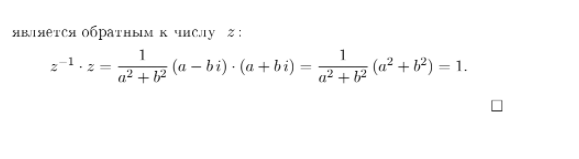
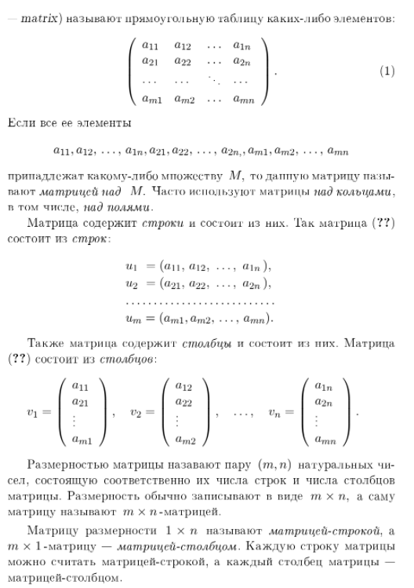
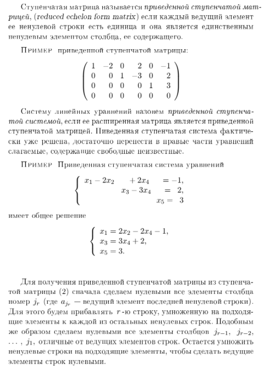
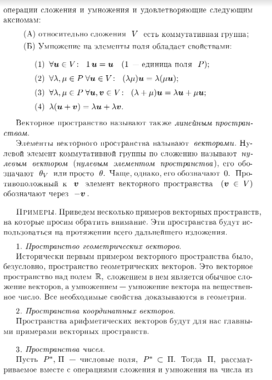
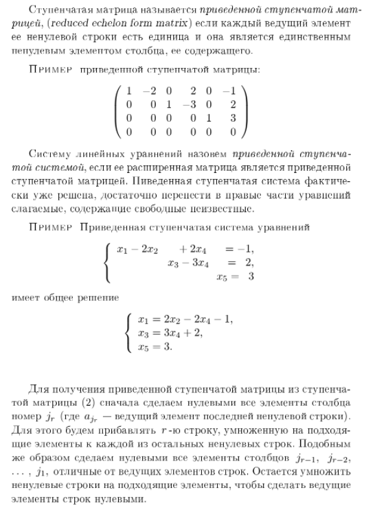
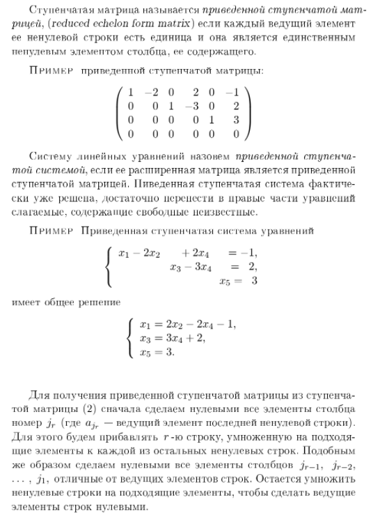
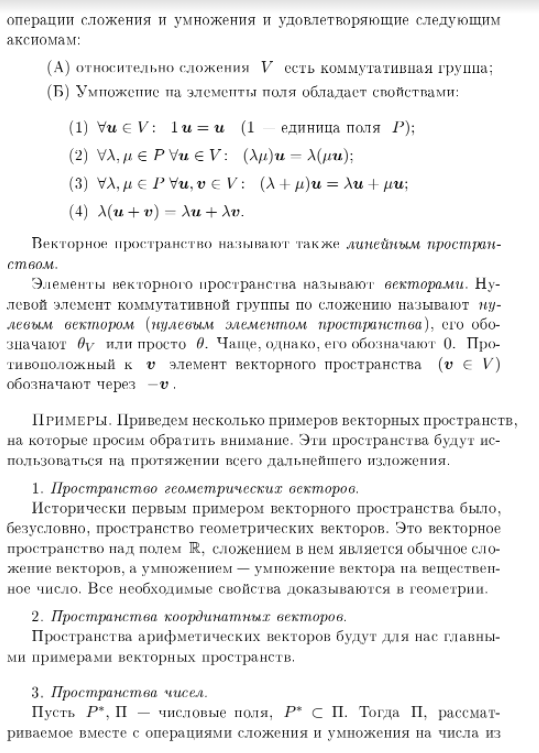
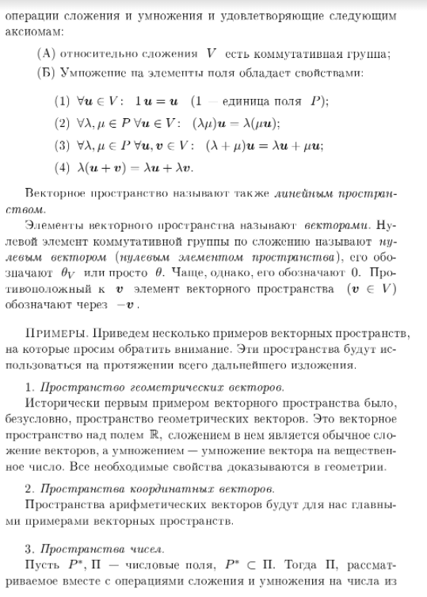

1. Понятие алгебраической операции
Алгебра изучает алгебраические операции. В школьном курсе матема-
тики вы встречались с действиями, производимыми над числами: сложе-
нием, умножением, вычитанием, делением, действиями нахождения про-
тивоположного числа, обратного числа, модуля числа, квадратного кор-
ня из числа. Вы изучали также операции сложения векторов, сложения
и умножения функций. Рассматривались также операции пересечения и
объединения множеств. При изучении каждого из этих действий прихо-
дится обращать внимание на свойства, которые удобно использовать в
рассуждениях.
Оказывается, у различных действий много общих свойств. Для того,
чтобы избежать повторов определений и некоторых рассуждений всякий
раз, когда мы исследуем новую конкретную алгебраическую операцию,
целесообразно посвятить некоторое время изучению алгебраических опе-
раций в общем виде.
1.1. Двухместные (бинарные) алгебраические операции
.
Под
двухместной алгебраической операцией на некотором множестве M по-
нимают функцию1
(отображение) из множества всех пар, составленных
из элементов множества M в само множество M. Поскольку множе-
ство всех пар, составленных из элементов множества есть декартово про-
изведение этого множества на само себя, т.е. M Ч M, то определение
двухместной алгебраической операции в множестве M может быть
сформулировано так:символически записано так:
Определение. Двухместной (бинарной) алгебраической операцией
в произвольном множестве M называется отображение f декартова
квадрата множества M в множеcтво M :
f : M Ч M M .
Вместо f(a, b) = c обычно пишут afb = c . Для обозначения опера-
ций, помимо букв, используют также и специальные знаки: + , , Ч ,
· , , , , , и т. д.
Примеры. 1. Двухместными алгебраическими операциями в основ-
ных числовых множествах служат: сложение и умножение в N , в Z , в
Q и R , а также вычитание в Z , в Q и R.
2. Действие вычитания в множестве натуральных чисел N алгебраи-
ческой операцией не является, так как не для каждой пары натуральных
чисел найдется натуральное число, являющееся их разностью. По этойже причине не является алгебраической операцией деление в N , а так-
же в Z , в Q и R . Впрочем, деление в множестве Q\ {0} уже служит
алгебраической операцией, также, как и деление в множестве R \ {0}.
Замечание. В математике используются и такие действия, (подоб-
ные вычитанию и делению), результат которых определен не для всякой
пары элементов рассматриваемого множества. Такие действия называют
частичными алгебраическими операциями. Частичная бинарная алгеб-
раическая операция в произвольном множестве M представляет собой
отображение некоторого подмножества декартова квадрата множества
M в множество M.
Примеры. 3. Примерами двухместных алгебраических операций в
множестве геометрических векторов могут служить действие сложения
векторов и операция нахождения векторного произведения.
4. Такие действия как умножение геометрического вектора на число и
скалярное умножение векторов алгебраическими операциями не являют-
ся, поскольку не удовлетворяют определению алгебраической операции.
Действительно, обозначим через V множество всех векторов простран-
ства. Используя это обозначение, можно записать, что умножение вектора
на число есть отображение RЧV V , а скалярное умножение это
функция V Ч V R.
1.2. Свойство коммутативности алгебраической операции.
Определение. Говорят, что алгебраическая операция , заданная
в произвольном множестве M обладает свойством коммутативности,
если выполняется
a, b M (a b = b a);
Напомним, что в школе свойство коммутативности называют переме-
стительным законом.
Примеры. 1. Нетрудно вспомнить ряд коммутативных алгебраиче-
ских операций: сложение и умножение в различных числовых множествах
( R , Q , N ), сложение геометрических векторов, операции пересечения
и объединения множеств.
2. Некоторые из известных вам алгебраических операций не являют-
ся коммутативными, например, операция вычитания в множестве Z (а
также в множествах Q , и R ). Для
доказательства, в данном случае,
достаточно привести пример: 8 2 = 2 8 .
1.3. Свойство ассоциативности алгебраической операции.
Определение. Говорят, что алгебраическая операция , заданная
в произвольном множестве M обладает свойством ассоциативности,
если выполняется
2
a, b M
(
(a b) c = a (b c)
)
;
Напомним, что в школе свойство ассоциативности называют сочета-
тельным законом.
Примеры. 1. Нетрудно вспомнить ряд ассоциативных алгебраиче-
ских операций: сложение и умножение в различных числовых множествах
( R , Q , N ), сложение геометрических векторов, операции пересечения
и объединения множеств.
2. Некоторые из известных вам алгебраических операций не являют-
ся ассоциативными, например, операция вычитания в множестве Z (а
также в множествах Q , и R ). Для доказательства, в данном случае,
достаточно привести пример: (8 2) 4 = 8 (2 4)) .
1.4. Свойство дистрибутивности
. Случается, на одном и том же
множестве заданы несколько алгебраических операций. При этом важ-
ным оказывается знать о том, как различные операции связаны друг с
другом. Одна из таких взаимосвязей выражается в свойстве дистрибу-
тивности.
Определение. Пусть в некотором множестве M заданы две алгеб-
раические операции и . Говорят, что операция дистрибутивна
относительно операции , если выполняется
a, b, c M
a (b c) = (a b) (a c) & (b c) a = (b a) (c a).
Примеры. 1. Операции умножения в множествах N , Z , Q , R
дистрибутивны относительно операций сложения в N , Z , Q , R соответствен-
но; Операции умножения в множествах Z , Q , R дистрибутивны также
и относительно операций вычитания в Z , Q , R соответственно.
2. Для того чтобы получить пример невыполнения свойства дистри-
бутивности, достаточно взять те же операции сложения и умножения чи-
сел. Операция сложения в R не является дистрибутивной относитель-
но умножения. Действительно, в противном случае, для всяких чисел
a, b, c R выполнялось бы a + (b · c) = (a + c) · (a + c) , . Однако это
не так: 1 + (2 · 3) = 7 , а (1 + 2) · (1 + 3) = 12 .
1.5. Нейтральный и антинейтральный элементы.
Определение. Элемент e из множества M называется нейтраль-
ным относительно заданной в M алгебраической операции , если ис-
тинно:
a M
(
a e = e a = a
)
.
Примеры. 1. Относительно операций сложения чисел в множествах
Z , Q , R нейтральным элементом является число 0 . Множество N
3
относительно операции сложения натуральных чисел нейтральным эле-
ментом не обладает.
2. Относительно операций умножения чисел в множествах N , Z , Q ,
R нейтральным элементом служит число 1 .
3. В множестве всех векторов плоскости (а также в множестве всех
векторов пространства) нейтральным элементом относительно операции
сложения векторов является нулевой вектор.
Оказывается, двух различных нейтральных элементов относительно
одной и той же алгебраической операции ни в каком множестве быть
не может.
Теоpема 1. (О единственности нейтрального элемента.) Никакое
множество с алгебраической операцией не может иметь болеее одного
нейтрального относительно этой операции элемента.
Доказательство. Пусть e1, e2 нейтральные элементы в неко-
тором множестве M с алгебраческой операцией . Рассмотрим e1 e2 :
поскольку e1 нейтральный элемент в M, то e1 e2 = e2; с другой
стороны, поскольку e2 нейтральный элемент в M, то e1 e2 = e1.
Поэтому получаем: e2 = e1 e2 = e1 .
В противопоставление к нейтральному можно определить антиней-
тральный элемент.
Определение. Элемент u из M называется антинейтральным от-
носительно заданной в M алгебраической операции , если истинно:
a M
(
a u = u a = u
)
.
Примеры. 4. В множествах Z , Q , R относительно операций умно-
жения чисел в этих множествах антинейтральным элементом является
число 0 .
5. Множества N Z , Q , R относительно операций сложения чисел
в этих множествах не имеют антинейтральных элементов.
Теоpема 2. (О единственности антинейтрального элемента.) Ни-
какое множество с алгебраической операцией не может иметь болеее одного
антинейтрального относительно этой операции
элемента.
Доказательство предлагаем читателю в качестве несложного упраж-
нения провести самостоятельно.
1.6. Симметричные элементы.
Определение. Пусть M множество с алгебраической операци-
ей , относительно которой в M имеется нейтральный элемент e .
4
Элемент a
из M называется симметричным некоторому элементу
a из M относительно операции , если истинно:
a
a = a a
= e.
Заметим, что согласно приведенному определению, если a
есть эле-
мент, симметричный к элементу a , то элемент a , в свою очередь, яв-
ляется симметричным к элементу a
.
Заметим также, что если в множестве с алгебраической операцией
имеется нейтральный элемент, то имеются и элементы, имеющие сим-
метричные. Действительно, нейтральный элемент сам себе симметричен:
e e = e . Однако другие элементы данного множества могут иметь, а
могут и не иметь симметричных элементов.
Примеры. 1. В множестве Z , относительно операции сложения
целых чисел каждое число k имеет симметричное ему число, это про-
тивоположное ему число k . Аналогично, как каждый элемент мно-
жества Q , так и каждый элемент множества R имеет симметричный
относительно операций сложения рациональных и вещественных чисел
соответственно.
2. Относительно операции умножения вещественных чисел в мно-
жестве R имеется симметричный элемент для каждого каждого веще-
ственного числа a отличного от нуля. Это число a
1 =
1
a
. Для числа
0 не существует в множестве R , симметричного элемента относительно
операции умножения вещественных чисел.
3. В множестве N {0} , состоящем из всех неотрицательных целых
чисел относительно операции сложения неотрицательных целых чисел
имеется нейтральный элемент (это число 0 ). Однако ни одно ненулевое
число этого множества не имеет в нем симметричного элемента относи-
тельно этой операции.
Теорема 3. (О единственности симметричного элемента в мно-
жестве с ассоциативной операцией.) Пусть в некотором множестве M
задана ассоциативная алгебраическая операция, относительно которой в
M имеется нейтральный элемент. Тогда никакой элемент из M не мо-
жет иметь более одного симметричного относительно этой операции эле-
мента.
Доказательство. Предположим, что e нейтральный элемент в
M, a, a
, a M, причем элементы a
и a
оба являются симметрич-
ными к элементу a . Тогда
a
= a
e = a
(a a
) = (a
a) a
= e a
= a
.
1.7. Традиции в названиях и обозначениях
. Для того, чтобы не
изобретать новых обозначений, очень часто произвольную двухместную
5
алгебраическую операцию обозначают привычным знаком · , или же
знаком + (независимо от того, имеет ли эта операция какое либо
отношение к обычному умножению или же сложению чисел).
Использование знака · свидетельствует о том, что мы встрети-
лись с использованием мультипликативной традиции в обозначениях и
названиях операции и особых для нее элементов. Термин мультиплика-
тивный произошел от английского слова multiplication умножение.
В том случае, когда операция обозначается знаком + , то мы имеем
дело с аддитивной традицией в обозначениях и названиях операции и
особых для нее элементов (от английского слова addition сложение).
В следующей таблице приведены обозначения и названия, используе-
мые в мультипликативной и аддитивной традициях.
Общий Мультипликативная Аддитивная
термин традиция традиция
Операция · умножение + сложение
Нейтральный
элемент 1 единица 0 нуль, ноль
Симметричный обратный к противоположный
к a элемент a 1 a элемент a к a элемент
Заметим, что при изучении операций, не обязательно обладающих
ЛЕКЦИЯ 2:2. Группы, кольца, поля
Термины, перечисленные в заглавии лекции позволяют выде-
лить те объекты, которые будут изучаться в этом семестре. Поня-
тия, которые они обозначают, сложились в 19 веке и стали основой
современной алгебры.
2.1. Понятие группы.
Группа это множество с хорошей,
во многих отношениях, алгебраической операцией.
Определение. Группой называется непустое множество G,
в котором задана бинарная алгебраическая операция такая, что:
(G1) она ассоциативна;
(G2) относительно этой операции в G существует нейтральный
элемент;
(G3) каждый элемент из G имеет симметричный ему относи-
тельно этого нейтрального элемента.
Примеры. 1. Группами с операцией сложения чисел служат
множества Z, Q, R. Нейтральным элементом этих групп служит
число 0, а симметричным произвольному числу a число a
противоположное к a число.
2. Группой с операцией сложения чисел служит также множе-
ство всех четных чисел. Действительно, cумма четных чисел четна,
поэтому сложение в множестве всех четных чисел является алгеб-
раической операцией. Сложение чисел, как известно ассоциативно
для всяких чисел, поэтому оно ассоциативно и в множестве всех
четных чисел. Чиcло 0 является четным и, очевидно, является
нейтральным элементом относительно операции сложения четных
чисел. Для каждого четного числа a число a также является
четным и, очевидно, служит для a симметричным элементом.
3. Множество, состоящее из одного числа 0 относительно опе-
рации сложения чисел является группой, в которой единственный
1
элемент служит нейтральным, а также симметричным самому се-
бе. Впрочем, это же одноэлементное множество является группой
также и относительно умножения чисел, поскольку 0 · 0 = 0 + 0.
4. Множество всех геометрических векторов плоскости состав-
ляет группу относительно операции сложения векторов. То же мож-
но сказать и о множестве всех векторов пространства.
5. Легко также привести примеры множеств с заданными на
них алгебраическими операциями, по той или иной причине не яв-
ляющихся группами. Так, множество N, рассматриваемое вместе
с операцией сложения чисел, группой не является, потому что не
содержит нейтрального относительно сложения элемента. Множе-
ство неотрицательных целых чисел N0 = N {0} также группой не
является, поскольку, хотя и содержит нейтральный элемент, но не
для каждого числа из этого множества имеется в этом множестве
симметричный элемент.
6. Относительно операции умножения чисел группами являются
множества Q \ {0}, R \ {0}.
Замечания. 1. Группу, в которой операция называется умно-
жением обычно называют мультипликативной группой. Группу, в
которой операция называется сложением, обычно называют адди-
тивной группой.
2. Операции во всех группах, которые были представлены в при-
мерах, обладают свойством коммутативности. Такие группы назы-
вают коммутативными группами. Их также называют абелевыми
группами в честь норвежского математика Нильса Хенрика Абе-
ля (18021829). Естественные примеры некоммутативных групп мы
пока еще рассмотреть не готовы, но они обязательно появятся.
2.2. Обратные операции в абелевых группах.
Рассмотрим
сначала произвольную I аддитивную абелеву группу A.
2
Предложение 1. В аддитивной абелевой группе A уравне-
ние
x + b = a (1)
для всяких a, b A имеет, и притом, единственное решение
x = ( b) + a.
Доказательство. Существование решения. Докажем,
что элемент x0 = b + a является решением уравнения (1), тем
самым и будет доказано существование решения. Действительно,
b + x0 = b + ( b + a) = (b + b) + a = 0 + a = a.
Единственность решения. Пусть x1 какое-либо решение
уравнения (1). Тогда
x1 + b = a
Прибавим к левой и правой частям элемент b
(x1 + b) + ( b) = a + ( b).
Переставим скобки:
x1 + (b + ( b)) = a + ( b).
Отсюда
x1 = a + ( b).
Единственность доказана, поскольку мы показали, что всякое
решение системы (1) равно одному и тому же элементу.
Замечание. Можно предложить другую, более короткую за-
пись доказательства единственности решения, вот она.
Пусть
x1 произвольное решение уравнения (1). Тогда
x1 = x1 + 0 = x1 + (b + ( b)) = (x1 + b) + ( b) = a + ( b).
3
Определение. Решение уравнения (1) называют разностью
элементов a и b и обозначают a b. Операцию вычисления
разности называют вычитанием.
Рассмотрим теперь мультипликативную абелеву группу G.
Предложение 2. В мультипликативной абелевой группе G
уравнение
x · b = a (2)
для всяких a, b G имеет, и притом, единственное решение
x = b
1
a.
Доказательство проведите самостоятельно.
Определение. Решение уравнения (2) называют частным
элементов a и b и обозначают a/b или
a
b
. Операцию нахожде-
ния частного называют делением.
2.3. Понятие кольца.
Кольцо это множество с двумя би-
нарными алгебраическими операциями, обычно называемыми сло-
жением и умножением.
Определение. Кольцом называется множество K c опера-
циями сложения и умножения, такими, что:
(К1) относительно сложения K есть коммутативная группа;
(К2) умножение дистрибутивно относительно сложения.
4
Примеры. 1. Можества Z, Q, R, рассматриваемые вместе с
операциями сложения и умножения чисел, являются кольцами.
2. Множество всех векторов в пространстве относительно сло-
жения векторов и векторного умножения является кольцом.
3. В множестве N всех натуральных чисел заданы операции
сложения и умножения, однако кольцом оно не является, так как
N не является группой относительно сложения.
Простейшие свойства произвольного кольца.
(1) Свойство нуля: 0a = 0 и a0 = 0 для всякого a K.
(2) Свойство противоположных элементов:
a( b) = ( a)b = (ab)
для любых a, b K.
Доказательство. (1) Обозначим b = 0a. Имеем
b + b = 0a + 0a = (0 + 0)a = 0a = b,
поэтому
b + b = b. (3)
Прибавим к левой и правой частям равенства (3) элемент b:
(b + b) + ( b) = b + ( b),
отсюда
b + (b + ( b)) = b + ( b),
b + 0 = 0,
b = 0,
следовательно 0a = 0. Второе равенство доказывается аналогично.
5
(2) Докажем равенство a( b) = (ab). Оно означает, что эле-
мент a( b) является противоположным для ab. Это и проверим
по определению противоположного элемента:
ab + a( b) = a(b + ( b)) = a0 = 0.
Равенство ( a)b = (ab) проверяется аналогично.
2.4. Коммутативные, ассоциативные кольца и кольца с
единицей.
Определение. Если умножение в кольце ассоциативно или
коммутативно то кольцо называется ассоциативным или комму-
тативным соответственно.
Определение. Если кольцо имеет нейтральный элемент от-
носительно умножения (единицу), то оно называется кольцом с
единицей.
Примеры. 1. Множества Z, Q, R относительно операций
сложения и умножения чисел являются ассоциативными коммута-
тивными кольцами с единицей.
2. Множество всех четных чисел относительно операций сло-
жения и умножения чисел является ассоциативным коммутатив-
ным кольцом без единицы.
Предложение. Если кольцо K с единицей содержит больше
одного элемента, то в нем 1 = 0.
Доказательство. Допустим 1 = 0. Тогда для всякого a K
выполнено 1a = 0a, откуда a = 1a = 0a = 0. Это означает, что в
кольце нет никаких других элементов, кроме нуля. Это противоре-
чит тому, что K содержит более одного элемента. Следовательно
наше предположение неверно, и на самом деле 1 = 0.
6
2.5. Понятие поля.
Сформулируем два определения поля,
которые на самом деле равносильны друг другу.
Определение. Полем называется неодноэлементное ассо-
циативное коммутативное кольцо с единицей, котором каждый
ненулевой элемент имеет обратный.
Примеры. 1. Числовые кольца Q и R являются полями.
2. Кольцо Z полем не является, так как не каждый его нену-
левой элемент имеет в Z обратный элемент.
3. Алгоритм Евклида
Одним из самых древних алгоритмов является алгоритм Ев-
клида (Евклид, 365 300 г. до н.э?), сохранивший свое значение и
в наши дни. В этой лекции мы познакомимся с ним и тесно связан-
ными с ним вопросами.
3.1. Операции вычисления частного и остатка при деле-
нии с остатком.
В школе изучается деление с остатком натураль-
ных чисел. Сейчас мы рассмотрим деление с остатком в области
целых чисел.
Определение 1. Говорят, что произведено деление с остат-
ком целого числа a на целое число b , если найдены такие целые
числа q и r , что выполняется:
a = bq + r , 0 6 r < |b| ;
Число q называется частным при делении с остатком, r
остатком. Представление числа a в указанном виде называет-
ся делением целого числа a на целое число b с остатком.
Замечание 1. Деление целых чисел и деление целых чисел
с остатком различные действия. Так, например, деление 7 на
2 в множестве Z невозможно, а деление с остатком выполнимо:
7 = 2 · 3 + 1 , 1 < 2 .
Упражнения. Разделить с остатком:
1) 17 на 6; 5) 6 на 17;
2) 17 на 6; 6) 6 на 17;
3) 17 на 6; 7) 6 на 17;
4) 17 на 6; 8) 6 на 17.
При чтении определения естественно возникают следующие во-
просы, ответы на которые в нем не содержатся:
1) Всегда ли возможно деление одного целого числа на другое?
2) Если деление возможно, то единственным ли образом опре-
делены частное и остаток?
1
Замечание 2. Разделить с остатком на число 0 невозможно,
поскольку невозможно 0 6 r < 0 .
Теорема (о делении целых чисел с остатком).
Любое целое число может быть разделено с остатком на
любое ненулевое целое число. Частное и остаток определены
однозначно.
Замечание 3. Деление с остатком не является алгебраиче-
ской операцией, поскольку сопоставляет паре чисел не одно число,
а пару чисел. Деление с остатком порождает две операции на-
хождение частного при делении с остатком и нахождение остатка
при делении с остатком. Правда, обе операции являются частичны-
ми операциями в множестве Z , поскольку деление с остатком на
0 невозможно.
3.2. Понятие наибольшего общего делителя целых чи-
сел.
Определение. Целое число d называется общим дели-
телем целых чисел a и b, если a
.
.
. d и b
.
.
. d.
Наибольший из общих делителей чисел a и b, называ-
ется их наибольшим общим делителем.
Наибольший общий делителей чисел a и b будем обо-
значать
gcd(a, b).
от английского great common divisor наибольший общий
делитель.
Пример. gcd(6, 4) = 2. Действительно, множество всех де-
лителей числа 4 есть {1, 2, 4, 2, 1}. Среди них делителями
числа 6 являются числа: 1, 1, 2, 2. Эти числа и образуют
множество всех общих делителей чисел 6 и 4. В этом множе-
стве наибольшим числом является 2.
Замечание. Легко проверяется, что если a = 0, то число |a|
служит наибольшим общим делителем чисел a и 0, В дальнейшем
2
мы будем рассматривать наибольшие общие делители только для
ненулевых чисел.
3.3. Существование последовательности Евклида.
Последовательность целых чисел
r0, r1, r2, . . . , rn 1, rn
назывется последовательностью Евклида для чисел a и b, если
выполнены три условия:
(1) r0 = a, r1 = b;
(2) для каждого i {2, 3, . . . , n} член ri есть остаток от
деления ri 2 на ri 1;
(3) rn 1 делится на rn.
Нет никакого сомнения в том, что для всяких ненулевых целых
чисел можно найти первые два члена последовательности Евклида,
а затем, производя деление с остатком, искать остальные. Однако,
утверждение о том, что в процессе построения обязательно встре-
тятся такие два члена rn 1 и rn, для которых rn 1 делится на rn,
требует доказательства.
Предложение. Для всяких ненулевых целых чисел a и b
последовательность Евклида существует.
Доказательство. Заметим, что все остатки числа неотри-
цательные, поэтому при построении последовательности Евклида,
получим:
3
r0 = a,
r1 = b,
r0 = r1q1 + r2 0 < r2 < |b|
r1 = r2q2 + r3 0 < r3 < r2
r2 = r3q3 + r4 0 < r4 < r3
. . . . . . . . . . . . . . . . . .
ri = ri+1qi+1 + ri+2 0 < ri+2 < ri+1
. . . . . . . . . . . . . . . . . . . . . . . . . . .
(1)
Остатки убывают: |b| > r2 > r3 > r4 > . . . > ri > ri+1 > . . . .
Эта последовательность не может быть бесконечной, поскольку су-
ществует лишь |b| 1 натуральных чисел, меньших, чем |b|. Сле-
довательно, существует наименьший натуральный остаток rn, и
далее мы получим:
rn 2 = rn 1qn 1 + rn 0 < rn < rn 1
rn 1 = rnqn
Доказательство закончено.
Упражнение. Построить последовательность Евклида для чи-
сел 321 и 843 .
Ответ: 321, 843, 120, 81, 39, 3.
3.4. Свойство последнего члена последовательности Ев-
клида.
Ненулевые остатки при делении с остатком целых чисел
всегда положительны по определению. Поэтому последний член по-
следовательности Евклида для целых чисел a и b, как правило,
положителен. Исключение составляет тот случай, когда a делится
на b и b < 0. В этом случае, очевидно, gcd(a, b) = |b|.
Теорема. Абсолютная величина последнего члена последова-
тельности Евклида является наибольшим общим делителем пер-
вых двух ее членов.
4
Доказательство. Проведем его методом математической ин-
дукции индукцией по длине последовательности Евклида.
1) Самая короткая последовательность Евклида: r0, r1 имеет
длину 2. В ней r0 делится на r1. Отсюда легко следует, что |r1|
является наибольшим общим делителем чисел r0 и r1.
2) Пусть теперь последовательность Евклида r0, r1, . . . , rn 1
имеет длину n > 2, и пусть для любой последовательности Ев-
клида длины n 1 утверждение теоремы выполнено.
Как следует из определения последовательности Евклида, по-
следовательность r1, r2, . . . , rn 1 является последовательностью Ев-
клида для чисел r1, r2. Согласно индуктивному предположению,
|rn 1| есть наибольший общий делитель чисел r1, r2.
Поскольку r0 = r1q1 + r2, то и r0 делится на |rn 1|. Доказано,
что |rn 1| есть общий делитель чисел r0 и r1.
Пусть теперь d поизвольный общий делитель чисел r0 и r1.
Поскольку r2 = r0 r1q1, то и r2 делится на d. Поэтому d явля-
ется общим делителем чисел r1 и r2. Так как |rn 1| = gcd(r1, r2),
то |rn 1| делится на d.
3.5. Реализация алгорима Евклида в псевдокоде
1
. Если
требуется найти наибольший общий делитель двух чисел и нет необ-
ходимости хранить все члены последовательности Евклида, то мож-
1
Псевдокод компактный (зачастую неформальный) язык описания алго-
ритмов, использующий ключевые слова императивных языков программирова-
ния, но опускающий несущественные подробности и специфический синтаксис.
Псевдокод обычно опускает детали, несущественные для понимания алгоритма
человеком. . . . Главная цель использования псевдокода обеспечить понимане
алгоритма человеком, сделать описание более воспринимаемым, чем исходный
код на языке программирования. Псевдокод широко используется в учебниках
и научно-технических публикациях, а также на начальных стадиях разработ-
ки компьютерных программ. . . . можно сказать, что обычно автор каждой
публикации применяет свой оригинальный псевдокод. . . . Зачастую источни-
ком псевдокода служат несколько языков и таким образом псевдокод часто
не содержит специфических признаков конкретного языка программирования.
Кроме того, математические выражения часто включаются в псевдокод в том
виде, как их принято записывать в математике, а не в языках программиро-
вания, а неоторые фрагменты псевдокода могут быть фразами естественного
языка (русского, английского и т. д.). . . . Википедия, Псевдокод.
5
но сократить количество используемых переменных (и областей па-
мяти, отводимых для их хранения), изменяя их значения в процессе
вычисления.
Поскольку при выполнении алгоритма Евклида производится
деление с остатком, то требуется, по крайней мере, три перемен-
ных. Обозначим их r0, r1, r2. Перед вычислением придаем пе-
ременной r0 в качестве ее значения число a, в качестве значения
переменной r1 числов b.
В каждом проходе цикла вычисления, включая первый, прежде
всего проверяем, не равно ли нулю число r1; если это так, то наи-
большим общим делителем является r0, если нет, то находим оста-
ток от деления r0 на r1 и присваиваем переменной r2 полученное
значение и изменяем значения переменных r0 и r1 : значение r0
делаем равным значению r1, а значение переменной r1 равным
значению r2.
ЛЕКЦИЯ 4:4. Арифметика классов целых чисел по моду-
лю
4.1. Равноостаточные числа по модулю. Пусть m N.
Целые числа a и b назовем равноостаточными по модулю m, если
их остатки от деления на m равны.
Примеры. Равноостаточными по модулю 2 являются любые
два нечетных числа или любые два четных числа. Числа 2 и
4 являются равноостаточными по модулю 3, так как дают при
делении на 3 остаток 1: 2 = 3 · ( 1) + 1, 4 = 3 · 1 + 1. Эти же
числа являются равноостаточными по модулю 6: 2 = 6 ·( 1) + 4,
4 = 6·0+4. Эти же числа не являются равноостаточными по модулю
4, так как 2 = 4 · ( 1) + 2, а 4 = 4 · 1 + 0.
Нетрудно заметить, что отношение иметь одинаковые остат-
ки по модулю m является отношением эквивалентности (т. е. ре-
флексивно, симметрично и транзитивно).
Примечание. Можно было бы рассматривать пары чисел, рав-
ноостаточных по любому ненулевому целому модулю, а не только
натуральному, однако, обычно, в этом необходимости не возникает.
Числа a и b, равноостаточные по модулю m называют также
сравнимыми по модулю m и записывают: a b(mod m), напри-
мер,
2 4(mod 3), 2 4(mod 6), 2 4(mod 4).
Теорема. Два числа a и b тогда и только тогда равнооста-
точны по модулю m, когда одно отличается от другого на число,
целое кратное m: k Z b = a + mk.
Доказательство. (1). Если a и b равноостаточны по моду-
лю m, то a = mqa + r, b = mqb + r для некоторых целых qa, qb,
r, отсюда
b a = m(qb qa) b = a + m(qb qa).
1
(2) Пусть b = a + mk, k Z. Разделим a и b с отстатком на
m:
a = mqa + ra, 0 6 ra < m,
b = mqb + rb, 0 6 rb < m.
Сложив подчеркнутые неравенства
0 6 ra,
rb < m,
получим rb < m + ra. Отсюда m < ra rb. Из другой пары
неравенств можно вывести (сделайте это сами) ra rb < m, поэтому
|rb ra| < m.
В то же время, из условия b = a + mk следует
mqb + rb = mqa + ra + mk rb ra = m(k + qa qb),
а это означает, что rb ra делится на m. это возможно лишь в том
случае, когда ra = rb.
4.2. Классы равноостаточных чисел.
Определение. Пусть m натуральное число. Множество
всех тех целых чисел, остатки которых от деления на m равны
друг другу и равны некоторому числу r , назовем классом рав-
ноостаточных чисел по модулю m или просто классом чисел по
модулю m .
Имеется ровно m различных остатков от деления целых чисел
на m : 0 , 1 , . . . , m 1 . Поэтому имеется ровно m различных
классов равноостаточных чисел по модулю m .
Поскольку каждое целое число имеет, и при том только один,
остаток от деления на m , то каждое целое число принадлежит ров-
но одному из классов чисел по модулю m . Таким образом, классы
чисел по модулю m составляют разбиение множества всех целых
чисел Z на непересекающиеся классы чисел.
2
Пример 1. По модулю 4 множество Z разбивается на 4 клас-
са:
{ 4k | k Z } = { . . . , 12, 8, 4, 0, 4, 8, 12, . . . };
{ 4k + 1 | k Z } = { . . . , 11, 7, 3, 1, 5, 9, 13, . . . };
{ 4k + 2 | k Z } = { . . . , 10, 6, 2, 2, 6, 10, 14, . . . };
{ 4k + 3 | k Z } = { . . . , 9, 5, 1, 3, 7, 11, 15, . . . }.
Возьмем произвольное число a из класса равноостаточных чи-
сел. Согласно теореме п.4.1, всякое число из этого класса имеет вид
a + mk, где k целое.
Получается, что весь класс можно задать, зная лишь одно, при-
чем любое, число из этого класса представителя этого класса.
Обычно в математике класс равноостаточных чисел по модулю
m, содержащий число a обозначают a
m , или просто a. В Sage
его обозначают Mod(a,m), а также mod(a,m).
Получается, что mod(a,m) = a
m = {a + mk | k Z}.
Примеры 2. Класс чисел по модулю 4, содержащий 1 можно
записать так:
{ 4k + 1 | k Z } = mod(1, 4) = mod( 3, 4) = mod(5, 4) = . . . ,
или так:
{ 4k + 1 | k Z } = 1 = 3 = 5 = . . . .
3. Для того чтобы найти другое число, задающеее класс, содер-
жащий данное число достаточно, благодаря теореме п. 4.1. приба-
вить или вычесть модуль один или несколько раз из имеющегося
представителя:
mod(24, 18) = mod(24 18, 18) = mod(6, 18),
mod( 20, 15) = mod( 20 + 15, 15) = mod( 5, 15) =
= mod( 5 + 15, 15) = mod(10, 15).
3
4.3. Операции над классами
равноостаточных чисел. Пусть
числа a1 и a2 принадлежат одному классу по модулю m, тогда
a2 = a1 + mk для некоторого k Z
(см. теорему п. 4.1). Пусть также числа b1 и b2 принадлежат од-
ному (может быть, другому) классу по модулю m, тогда
b2 = b1 + mt для некоторого t Z.
Сложив эти равенства, получим
a2 + b2 = a1 + b1 + m(k + t), k + t Z
Это означает, что числа a1 +b1 и a2 +b2 также принадлежат неко-
торому одному классу целых равноостаточных чисел по модулю m.
Теперь перемножим те же равенства:
a2b2 = a1b1 + m(a1t + b1k + mkt), a1t + b1k + mkt Z.
Получили, что числа a1b1 и a2b2 также принадлежат одному клас-
су целых чисел по модулю m. Нами доказана
Теорема. Пусть числа a1 и a2 принадлежат одному классу
целых чисел по модулю m. Пусть числа b1 и b2 принадлежат
одному классу целых равноостаточных чисел по модулю m. То-
гда
(1) числа a1 + b1 и a2 + b2 принадлежат одному классу по
модулю m;
(2) числа a1b1 и a2b2 также принадлежат одному классу по
модулю m.
Для того, чтобы осмыслить полученное, рассмотрим
Пример 1. Используем образ, предложенный известным мате-
матиком Д. К. Фаддевым в его Лекцях по алгебре (М., Наука,
1984, с. 17).
Пусть m = 4. Представим себе, что числа, делящиеся на 4, мы
записываем черными цифрами, дающие при делении на 4 в остатке
4
1 красными, дающие в остатке 2 синими, дающие в остатке 3
зелеными.
Утверждение (1) теоремы нашего случая можно переформули-
ровать так: цвет суммы двух чисел зависит только от цветов сла-
гаемых, но не от того, как выбраны эти слагаемые внутри своих
классов. Утверждение (2) говорит о том, что цвет произведения
зависит только от цвета сомножителей.
Например, складывая зеленое число с синим, мы всегда по-
лучим красное. Умножая синее на красное, мы всегда получим
синее, и т.д. Сокращенно это можно записать:
з + с = к, с · к = с и т. д.
Для четырех символов: ч, к, с мы можем записать суммы,
разности и произведения, руководствуясь сложением, вычитани-
ем и умножением чисел (все равно каких), взятых из соответству-
ющих классов.
То же самое имеет место при любом m.
Определения. (1) Суммой двух классов по модулю m на-
зывается класс по модулю m, к которому принадлежит сумма
каких-либо чисел из слагаемых классов.
(2) Произведением двух классов по модулю m называется
класс по модулю m, к которому принадлежит произведение
каких-либо чисел из перемножаемых классов.
Благодаря теореме, эти определения корректны какие бы чис-
ла из двух данных классов мы ни выбрали, их сумма и их про-
изведение будут принадлежать вполне определенным классам, не
зависящим от выбора чисел из данных классов.
Таким образом, можно записать, что для любых целых a и b
выполняется:
a + b = a + b, a · b = a · b,
или, в обозначениях из Sage:
mod(a, m) + mod(b, m) = mod(a + b, m),
mod(a, m) · mod(b, m) = mod(ab, m),
5
Примеры. 2. Пусть m = 6, тогда 4 + 3 = 4 + 3 = 7 = 1,
3 · 2 = 6 = 0.
3. при вычислениях иногда бывает удобно заменять представи-
телей классов:
mod(33, 25)+mod(13, 25) = mod(8, 25)+mod( 12, 25) = mod( 4, 25),
mod(33, 18)·mod(20, 18) = mod( 3, 18)·mod(2, 18) = mod( 6, 18).
4.4. Кольца
Zm . Пусть m натуральное число. Обозначим
множество, элементами которого служат все классы равноостаточ-
ных целых чисел по модулю m символом Zm .
Теорема Множество Zm относительно операций сложения и
умножения классов является ассоциативно-коммутативным коль-
цом с единицей.
Нулем этого кольца служит 0, единицей 1 .
Доказательство сводится к непосредственной проверке необ-
ходимых свойств с использованием правил сложения и умножения
в Zm . Оставляем его читателю в качество Упражнения 6.5.1.
Пример. Приведем таблицы операций сложения и умножения
в кольце Z7 .
+
m = 7 0 1 2 3 4 5 6
0 0 1 2 3 4 5 6
1 1 2 3 4 5 6 0
2 2 3 4 5 6 0 1
3 3 4 5 6 0 1 2
4 4 5 6 0 1 2 3
5 5 6 0 1 2 3 4
6 6 0 1 2 3 4 5
·
m = 7 0 1 2 3 4 5 6
0 0 0 0 0 0 0 0
1 0 1 2 3 4 5 6
2 0 2 4 6 1 3 5
3 0 3 6 2 5 1 4
4 0 4 1 5 2 6 3
5 0 5 3 1 6 4 2
6 0 6 5 4 3 2 1
Рассмотрите, например, первую
таблицу. Первое слагаемое на-
ходим в заглавном столбце, а второе в заглавной строке. На пере-
сечении строки, в которой расположено первое слагаемое и столбца,
6
в котором расположено второе слагаемое находим сумму. Напри-
мер, 5 + 4 = 2.
В Sage кольцо Zm обозначают Zmod(m), или Integer(m), или
IntegerModRing(m) Мы будем также обозначать его Zm.
Кольца вида Zm могут служить примерами конечных колец
(колец, множество элементов которых конечно).
4.5. Поля классов целых чисел.
Теорема Кольцо Zm является полем, если и только если m
простое число.
Доказательство опускаем.
Замечание. Поля Zp (p простое число) служат примерами
полей, множество элементов которых конечно.
5. Комплексные числа
5.0. Исходные соображения. Как известно, вещественные
числа можно изображать на прямой (если выбрать на ней точ-
ку начала координат, единичный отрезок и направление) точками
или векторами (направленными отрезками). Возникает идея: рас-
ширить множество вещественных чисел так, чтобы новые числа
можно было изображать на плоскости точками или векторами.
Однако, как производить сложение и умножение этих новых чи-
сел и каков геометрический смысл сложения и умножения? Здесь
окажутся продуктивными следующие соображения. Допустим, что
два вещественных числа изображены на числовой оси векторами.
Тогда сумма этих векторов, как легко заметить, изображает сумму
данных чисел.
Вектор, изображающий произведение чисел, найти сложнее. Преж-
де, чем формулировать правило, заметим, что каждый вектор на
числовой оси определяется своей длиной и направлением. Направ-
ление можно описать тем углом, который образует вектор с поло-
жительным направлением числовой оси: этот угол может равняться
либо 0
, либо 180
. Нетрудно видеть, что следующее правило ока-
зывается верным. Допустим, что два числа изображены радиусами-
векторами на числовой оси. Для того, чтобы найти изображение
произведения этих чисел, достаточно первый вектор повернуть
на угол, который составляет второй вектор с положительным
направлением числовой оси, а затем длину первого вектора умно-
жить на длину второго.
Эти правила можно попытаться использовать не только для ве-
щественных чисел (которые мы изображаем на прямой), но и для
тех чисел, которые мы собираемся изображать на плоскости.
1
5.1. Определение комплексного числа.
Определение. Системой комплексных чисел называется мно-
жество R Ч R всех пар вещественных чисел, рассматриваемое в
месте с двухместными алебраическими операциями:
(а) сложения, выполняемого по правилу
(a1, b1) + (a2, b2) = (a1 + a2, b1 + b2); (1)
(б) умножения, выполняемого по правилу1
.
(a1, b1) · (a2, b2) = (a1a2 b1b2, a1b2 + a2b1). (2)
Множество вcех комплексных чисел обозначается буквой C.
Примеры. Пусть z1, z2 C, z1 = ( 2; 3), z2 = (3, 2). Тогда
z1 + z2 = ( 2, 3) + (3, 2) = ( 2 + 3, 3 2) = (1, 1),
z1 · z2 = ( 2, 3)·(3, 2) = ( 2 · 3 3 ·( 2), 2 ·( 2) + 3 · 3) = (0, 13).
5.2. Вещественные числа как комплексные.
Будем обо-
значать произвольное вещественное число a в виде пары:
a = (a, 0). (3)
При таком подходе вещественное число становится комплексным
числом, а множество вещественных чисел подмножеством комплекс-
ных: R C. Легко проверить, что складывая и перемножая веще-
ственные числа по правилам для комплексных чисел мы получим
те же результаты, что и при сложении и умножении данных чи-
сел по правилам для вещественных чисел:
a
C
+ b = (a, 0)
C
+ (b, 0) = (a
R
+ b, 0) = a
R
+ b;
a
C
· b = (a, 0) C
· (b, 0) = (a
R
· b
R
0
R
· 0, a
R
· 0
R
+ b
R
· 0) = (a
R
· b, 0) = a
R
· b.
1Правило умножения может, на первый взгляд, показаться странным. Чем
оно полезно, будет ясно из дальнейшего.
2
Поэтому говорят, что операции сложения и умножения в множестве
C согласованы с операциями сложения и умножения в R.
5.3. Мнимая единица.
Комплексное число (0, 1) называют
мнимой единицей и обозначают буквой i. Легко проверить, что
i
2 = i · i есть вещественное число 1: i
2 = 1. Проверьте это
самостоятельно.
Как известно, не существует вещественного числа, квадрат которо-
го есть 1 . В множестве C такие числа как видим, существуют,
например, i.
Так как i
2 = 1, то
i
4 = i
2
· i
2 = 1.
Поэтому, для всяких k, m N {0} получаем:
i
4m+k = (i
4
)
m · i
k = i
k
.
Это свойство можно использовать при вычислении целых сте-
пеней числа i.
Примеры. i
33 = i
32+1 = i,
i
234 = i
234
· 1 = i
234
· i
236 = i
2 = 1.
5.4. Алгебраическая форма комплексного числа.
Исполь-
зуя правила сложения и умножения комплексный чисел, а также
введенные обозначения вещественных чисел и определение числа
i, вычислим для произвольных a, b R число a + b · i:
a + bi = (a, 0) + (b, 0) · (0, 1).
Найдем сначала произведение, содержащееся в правой части:
(b, 0) · (0, 1) = (b · 0 0 · 1, b + 0 · 0) = (0, b).
Отсюда
a + bi = (a, 0) + (0, b) = (a, b).
Полученное равенство позволяет утверждать, что каждое ком-
плексное число z = (a, b) может быть записано, и притом един-
ственным образом, в виде
z = a + bi. (4)
3
Эту запись называют алгебраической (или нормальной) формой ком-
плексного числа.
Число a называют вещественной, а b i мнимой частью
данного комплексного числа; b называют коэффиицентом мнимой
части.
При записи чисел в алгебраической форме, ради краткости, вме-
сто a + ( b)i часто пишут: a b i.
Пример. (2, 3) = 2 3i; вещественная часть этого числа
равна 2, мнимая часть равна 3i, коэффициент мнимой части
есть 3.
5.5. Сложение и умножение комплексных чисел в алгеб-
раической форме.
Любая форма записи становится ценной, если
она удобна для решения тех или иных задач, например, произво-
дить операции сложения и умножения.
Правила сложения и умножения комплексных чисел
в алгебраической форме.
Сложение и умножение комлексных чисел в алгебраической
форме можно выполнять также, как над многочленами; при
этом следует применять дополнительно правило: заменять i
2
на 1.
Пример. Вычислим z1 · z2, где z1 = 5 2i, z2 = 11+ 13i. По
правилу умножения комплексных чисел в алгебраической форме
получаем:
z1 · z2 = (5 2i)( 11 + 13i) = 55 + 65i + 22i 26i
2 = 29 + 87i.
Обоснование правил сложения и умножения комплекс-
ных чисел в алгебраической форме
Проверим пригодность правила умножения. В определении умно-
жения комплексныз чисел (см п. 5.2) комплексные числа заменим
их записями в алгебраической форме:
(a1 + b1i) · (a2 + b2i) = (a1a2 b1b2) + (a1b2 + a2b1)i (5)
4
А теперь перемножим a1+b1i и a2+b2i считая их многочленами
от буквы i и заменяя i
2 на 1:
(a1 + b1i) · (a2 + b2i) = a1a2 + a1b2i + a2b1i + b1b2i
2 =
a1a2 + a1b2i + a2b1i b1b2 = (a1a2 b1b2) + (a1b2 + a2b1)i. (6)
Как видим, результат правильный.
Правило сложения комплексных чисел в алгебраической форме
предлагается обосновать самостоятельно.
5.6. Сопряженные комплексные числа.
Для произвольно-
го комплексного числа z = a + bi число z = a bi называется со-
пряженным (комплексно-сопряженным) к числу z . Важные свой-
ства комплексно-сопряженных чисел:
(1) z = z; (2) z1 + z2 = z1 + z2;
(3) z1 · z2 = z1 · z2; (4) z + z = 2a, если z = a + b i;
(5) z · z = a
2 + b
2
, если z = a + b i.
Задание. Проверьте перечисленные свойства.
5.7. Правило деления комплексных чисел в алгебраиче-
ской форме.
Правило деления комплексных чисел в алгебраиче-
ской форме
Для того, чтобы разделить два комплексных числа, записанных
в алгебраической форме, достаточно записать частное в виде
дроби, а затем числитель и знаменатель умножить на число,
сопряженное знаменателю.
Пример. Произведем деление.
2 3i
3 + 4i
=
(2 3i)(3 4i)
(3 + 4i)(3 4i)
=
(6 12) (8 + 9)i
9 + 16
=
6 17i
25
=
=
6
25
17
25
i.
5
обоснование правила деления комплексных чисел в
алгебраической форме
Найдем алгебраическую форму частного от деления произволь-
ного комплексного числа z1 = a1 + b1i на произвольное ненулевое
число z2 = a2 + b2i.
Если x частное от деления z1 на z2, то z2x = z1. Отсюда
z2z2x = z1z2 следовательно x также есть частное от деления z1z2
на z2z2.
z1
z2
=
z1z2
z2z2
=
(a1 + b1i)(a2 b2i)
(a2 + b2i)(a2 b2i)
=
(a1 + b1i)(a2 b2i)
a
2
2 + b
2
2
=
=
(a1a2 + b1b2) + ( a1b2 + a2b1)i
a
2
2 + b
2
2
=
a1a2 + b1b2
a
2
2 + b
2
2
+
a1b2 + a2b1
a
2
2 + b
2
2
i.
Полученные две дроби являются вещественными числами, сле-
довательно мы получили комплексное число в алгебраической фор-
ме.
5.8. Поле комплексных чисел.
Теорема. Множество комплексных чисел C, рассматривае-
мое вместе с операциями сложения и умножения является полем.
Доказательство. (1) То, что отнсительно сложения множе-
ство комплексных чисел является абелевой группой с нейтральным
элементом 0 = 0+0i и симметричным для a+bi элементом a bi
доказывается непосредственной проверкой.
(2) То, что умножение дистрибутивно отностительно сложения,
ассоциативно, коммутативно, и то, что нейтральным элементом от-
носительно сложения служит число 1 = 1 + 0i также доказывается
непосредственной проверкой.
Задание. Докажите сами все перечисленные свойства.
(3) Для всякого ненулевого комплексного числа z = a + b i,
очевидно, выполняется: a
2 + b
2 = 0. Число
z
1 =
1
a
2 + b
2
(a b i)
6
является обратным к числу z :
z
1
· z =
1
a
2 + b
2
(a b i) · (a + b i) = 1
a
2 + b
2
(a
2 + b
2
) = 1.

6. Тригонометрическая форма комплексного
числа
6.1. Изображение комплексного числа на плоскости.
Рас-
смотрим плоскость, на которой задана декартова система коорди-
нат. Произвольное комплексное число z = a+b i будем изображать
на этой плоскости точкой с координатами (a; b). При этом, по-
скольку каждая точка на плоскости имеет, и притом единственные
координаты в виде пары вещественных чисел, каждая точка бу-
дет служить изображением, и притом единственного, комплексного
числа. Заметим, вещественная часть комплексного числа отклады-
вается на оси Ox, а мнимая на оси Oy. Поэтому, при изобра-
жении комплексных чисел, ось абсцисс называют вещественной,
а ось ординат мнимой осью, а саму плоскость комплексной
плоскостью.
5 5 a 10 x
y
5
5
b
(a, b) = a + b i
Заметим, что способ изображения комплексных чисел точками
на плоскости обобщает хорошо известный способ изображения ве-
щественных чисел на прямой (числовой оси). Те из комплексных
чисел, которые являются вещественными, изображаются на веще-
ственной оси, и всякая точка на вещественной оси служит изобра-
жением некоторого вещественного числа.
Другой способ геометрического представления комплексного чис-
ла на плоскости состоит в том, что число a + b i изображают на-
1
правленным отрезком радиусом-вектором) с началом в начале
координат и концом в точке с координатами (a; b). Этот радиус-
вектор, очевидно, имеет координаты (a; b). Во многих случаях
этот способ изображения оказывается более удобным, поскольку
позволяет представлять на геометрическом языке не только сами
числа но и алгебраические операции над ними.
5 5 a 10 x
y
5
5
b
(a, b) = a + b i
Пусть z1 = (a1, b1) и z2 = (a2, b2) два комплексных числа.
Сумма этих чисел в форме пар есть z1 + z2 = (a1 + a2, b1 + b2).
Поэтому вектор, изображающий число z1 + z2 имеет координаты
(a1 + a2, b1 + b2). Известно, что координаты суммы векторов на
плоскости равны суммам координат слагаемых. Отсюда следует,
что вектор, изображающий сумму z1+z2 есть сумма вектора, изоб-
ражающего z1 и вектора, изображающего z2.
Напомним, что векторы можно складывать по правилу парал-
лелограмма. Это простое соображение позволяет нам найти изоб-
ражение суммы двух комплексных чисел, если известны векторы,
изображающие эти числа. Вектором, изображающим сумму будет
служить вектор, совпадающий с диагональю праллелограмма, сто-
ронами которого служат векторы, изображающие слагаемые.
Заметим, что вектор, изображающий число z, где z = (a, b)
имеет координаты (a, b). Легко увидеть, что он симметричен век-
тору, изображающему z относительно оси Ox.
2
Заметим также, что вектор, изображающий число z = ( a, b)
симметричен, вектору, изображающему z относительно начала ко-
ординат.
6.2. Модуль и аргумент комплексного числа.
Модулем
или абсолютной величиной комплексного числа z = a + b i назы-
вается вещественное число
|z| =
a
2 + b
2. (1)
Легко видеть, что каждое комплексное число имеет модуль. Гео-
метрический смысл понятия модуля: модуль есть расстояние точ-
ки, изображающей данное комплексное число от начала коорди-
нат (объясните, почему). Другой смысл модуля длина радиуса-
вектора, изображающего данное число.
Заметим, что модуль комплексного числа z, являющегося ве-
щественным (z = a + 0 i), есть известный вам ранее модуль (абсо-
лютная величина) вещественного числа. Действительно,
|a + 0i|C =
a
2 + 02 =
a
2 = |a|R
.
Примеры. |3 + 4i| =
9 + 16 = 5, |i| =
0
2 + 12, |1 3i| =
1 + 9 =
10.
Аргументом комплексного числа z = a + b i называется веще-
ственное число такое, что
cos =
a
|z|
, sin =
b
|z|
. (2)
Геометрический смысл аргумента величина угла между поло-
жительной полуосью оси Ox и радиусом-вектором, изображающим
данное комплексное число.
3
Рассмотрим рисунок, изображающий комплектное число z =
a + bi в виде радиус-вектора. Косинус угла , образованного по-
луосью Ox и радиусом-вектором, изображающим z, равен отно-
шению a к длине этого радиуса-вектора:
cos =
a
|z|
.
Аналогично,синус угла равен отношению b к длине этого радиуса-
вектора:
sin =
b
|z|
.
Из свойств тригонометрических функций следует, что если неко-
торое число является аргументом комплексного числа z , то
число + 2 k для всякого k Z также служит его аргументом.
Для каждого комплексного числа, отличного от нуля, существет
бесконечно много аргументов.
С другой стороны, любые два аргумента комплексного числа z
могут отличаться друг от друга только на число, целое кратное 2 .
Тот из аргументов числа z, который удовлетворяет условию
< 6 (3)
называют главным аргументом. Его обозначают arg(z).
Пример. Найдем аргумент числа z = 1 i. Для этого сначала
найдем модуль этого числа: |z| =
1
2 + ( 1)2 =
2. Далее,
cos =
1
2
=
2
2
, sin =
1
2
=
2
2
.
Осюда, в качестве можно взять число
4
или
7
4
, а также
число
39
4
. При этом, arg(1 i) =
4
.
4
Заметим, что главным аргументом всякого положительного ве-
щественного числа служит число 0, а главным аргументом отри-
цательного вещественного числа число . Число 0 не имеет ар-
гумента, поскольку его модуль равен 0.
Из геометрических представлений следует, что комплексное чис-
ло может быть полностью задано не только своей вещественной ча-
стью и коэффициентом мнимой части, но также и своим модулем и
аргументом.
6.3. Тригонометрическая форма комплексного числа.
Теорема. (А) Всякое комплексное число можно представить в
виде
z = r (cos + i sin ), где r, R , r > 0. ( )
(Б) Если комплексное число представлено в виде ( ), то r есть
его модуль, а его аргумент.
Доказательство. (А) Пусть z = a+bi. Пользуясь определе-
ниями, получим:
z =
|z|
|z|
a +
|z|
|z|
b i = |z|
(
a
|z|
+
b
|z|
i
)
= |z|(cos + i sin ), (4)
где аргумент числа z .
(Б) Из ( ) получаем, что z = r cos +i·r sin . Следовательно,
r cos вещественная часть числа z, а r sin коэффициент его
мнимой части. Поэтому
|z| =
(r cos )
2 + (r sin )
2 =
r
2 cos2 + r
2 sin2 = (5)
= |r|
cos2 + sin2 = |r| = r. (6)
Поскольку cos =
r cos
|z|
, sin =
r sin
|z|
, то число является
аргументом числа z .
5
Запись комплексного числа в виде ( ) называется тригоно-
метрической формой этого числа.
Примеры. 1. Запишем число z = 1 i
3 в тригонометриче-
ской форме. Обозначим arg(z) = . Получаем |z| =
1 + 3 = 2,
cos =
1
2
, sin =
3
2
. Отсюда arg(z) =
3
. Искомый резуль-
тат:
z = 2 (
cos (
3
)
+ isin (
3
)) .
2. Найдем тригонометрическую форму числа z = 3 4i. Вы-
числяем: |z| = 5, cos = 0,6, sin = 0,8, если = arg(z).
Значение аргумента не является табличным. Сопоставляя знаки
cos и sin , убеждаемся, что arg(z) принадлежит четвертой ко-
ординатной четверти. Здесь свои значения имеет функция arcsin x.
Поэтому arg(z) = arcsin( 0,8).
6.4. Умножение комплексных чисел в тригонометриче-
ской форме.
Умножение комплексных чисел, записанных в три-
гоомерической форме производить удобно.
Правило умножения комплексных чисел в тригоно-
метрической форме.
Для того чтобы перемножить два комплексных числа, доста-
точно перемножить их модули, а аргументы сложить:
r1 (cos 1 + i sin 1) · r2 (cos 2 + i sin 2) =
= r1r2
(
cos( 1 + 2) + i sin( 1 + 2)
)
.
Пример. Вычислим произведение z1z2 чисел
z1 = 2 (
cos
2
3
+ isin
2
3
)
и z2 = 3 (
cos (
4
)
+ isin (
4
)) .
6
Получаем
z1z2 = 6 (
cos
5
12
+ isin
5
12 )
.
Из правила умножения комплексных чисел в тригонометриче-
ской форме виден геометрический смысл умножения комплексных
чисел. Дело в том, что радиус-вектор определяется углом поворота
относительно положительного полуоси Ox и своей длиной. Вели-
чина угла поворота есть аргумент соответствующего комплексного
числа, а длина радиуса вектора есть модуль этого числа.
Геометрический смысл умножения комплексных чи-
сел.
Для того, чтобы получить радиус-вектор, изображающий про-
изведение комплексных чисел z1 и z2 достаточно радиус-
вектор, изображающий z1 повернуть на угол, численно равный
аргументу числа z2, а длину полученного вектора умножить
на модуль числа z2.
Обоснование правила умножения комплексных чисел
в тригонометрической форме
Пусть
z1 = r1 (cos 1 + i sin 1), z2 = r2 (cos 2 + i sin 2).
Тогда
z1z2 = r1 (cos 1 + i sin 1) r2 (cos 2 + i sin 2) = (7)
= r1r2
(
(cos 1 cos 2 sin 1 sin 2) + (cos 1 sin 2 + sin 1 cos 2)i
)
.
(8)
Применив формулы синуса суммы и косинуса суммы, получаем:
z1z2 = r1r2
(
cos( 1 + 2) + i sin( 1 + 2)
)
.
7
Из правила умножения комплексных чисел в тригонометриче-
ской форме получаем правило возведения в степень ( n N ):
(
r (cos + i sin )
)n = r
n
(cos n + i sin n ).
6.5. Деление комплексных чисел в тригонометрической
форме.
Правило деления комплексных чисел в тригономет-
рической форме.
Для того чтобы разделить одно комплексное число на другое
в тригонометрической форме, достаточно разделить модуль де-
лимого на модуль делителя и вычесть из аргумента делимого
аргумент делителя:
r1(cos + i sin )
r2(cos + i sin )
=
r1
r2
(
cos( ) + i sin( )
)
.
Пример. Вычислим частное от деления числа
z1 = 2 (
cos
2
3
+ isin
2
3
)
на число z2 = 3 (
cos (
4
)
+ isin (
4
)) :
z1
z2
=
2
3
(
cos
11
12
+ isin
11
12 )
.
Геометрический смысл деления комплексных чисел.
Для того, чтобы получить радиус-вектор, изображающий част-
ное от деления комплексных чисел z1 и z2 достаточно радиус-
вектор, изображающий z1 повернуть на угол, противополож-
ный аргументу числа z2, а длину полученного вектора разде-
лить на модуль числа z2.
8
Обоснование правила деления комплексных чисел в
тригонометрической форме
Предлагаем самостоятельно доказать, используя определение част-
ного, правило нахождения частного в тригонометрической форме:
Для этого надо вспомнить, что частное
z1
z2
по определению есть
решение уравнения z2 · x = z1 и убедиться, что число
r1
r2
(
cos( ) + i sin( )
)
является решением этого уравнения.
6.6. Извлечение корня из комплексного числа.
Пусть n N. Корнем n -й степени из комплексного числа z
(или значением n z ) называется всякое комплексное число t, удо-
влетворяющее условию
t
n = z.
Следующая теорема приводится без доказательства.
Теорема (о корне из комплексного числа). Пусть n N.
Для всякого комплексного числа z, отличного от нуля, существует
точно n различных значений корня n -й степени из числа z.
Проведем дополнительные рассуждения.
Допустим, t есть значение корня n -й степени из числа z, три-
гонометрическая форма числа t = r(cos +i sin ). Возведя в n -ю
степень по правилу (см. п.7.3), получим
z = t
n = r
n
(cos(n ) + i sin(n )).
тригонометрическую форму числа |z|. Поэтому r
n = |z|, а n
аргумент числа z (по теореме п. 8.3). Отсюда
r =
n
|z|
Это означает, что их изображения в виде точек на комплексной
плоскости лежат на окружности с центром в начале координат и
радиусом n r.
9
Кроме того, если один из аргументов числа z, то n =
+ 2 k для некоторого целого k. Отсюда
=
n
+
2
n
k.
Для получения разных значений корня нужно выбирать различные
целые значения k. Можно показать, что используя значения k =
0, 1, . . . , n 1, получим аргументы всех значений корня n -й степени
из z.
Видно, что соседние точки, изображающие корни n -й степени
из числа z отстоят друг от друга на один и тот же угол
2
n
. Полу-
чается, что точки комплексной плоскости, изображающие значения
корня, находятся на окружности радиуса n r и делят ее на n рав-
ных частей.
7. Системы линейных уравнений и их матрицы
7.1. Понятие системы линейных уравнений.
Общий вид
системы линейных уравнений над полем произвольным полем P :
a11x1 a12x2 · · · a1nxn = b1,
a21x1 a22x2 · · · a2nxn = b2,
. . . . . . . . . . . . . . . . . . . . . . . . . . . . . . . . .
am1x1 am2x2 · · · amnxn = bm.
( )
Здесь x1, x2, . . . xn посторонние для P буквы, называемые
неизвестными, a11, . . . a1n, a21, . . . , a2n, . . . , am1, . . . , amn элемен-
ты поля P, называемые коэффициентами при неизвестных или
просто коэффициентами, b1, b2, . . . , bm элементы поля P, назы-
ваемые свободными членами системы. Произвольный коэффициент
будем обозначать aij . Заметим, что i это номер уравнения, а j
номер неизвестного, коэффициентом которого служит aij . Урав-
нение номер i (i -е уравнение) можно записать в виде:
ai1x1 ai2x2 · · · ainxn = bi
.
Число уравнений (в данном случае это m) не обязано совпадать
с числом неизвестных (их n).
Решением (??) называется последовательность 1, 2, . . . , n эле-
ментов из P такая, что выполнены все равенства
ai1 1 ai2 2 · · · ain n = bi
для i = 1, 2, . . . , m.
Многие практически важные задачи сводятся, в конечном сче-
те, к вычислению решений систем линейных уравнений. При этом
число уравнений системы может достигать, как пишут, сотен тысяч
или даже миллионов.
7.2. Понятие матрицы.
Очевидно, система линейных уравне-
ний полностью определяется ее коэффициентами, свободными чле-
нами, а также порядком их размещения. Поэтому для задания си-
стемы линейных уравнений (а также для ее исследования и реше-
ния) удобно использовать матрицы. Матрицей (английский термин
1
matrix) называют прямоугольную таблицу каких-либо элементов:
a11 a12 . . . a1n
a21 a22 . . . a2n
· · · · · ·
.
.
. · · ·
am1 am2 . . . amn
. (1)
Если все ее элементы
a11, a12, . . . , a1n, a21, a22, . . . , a2n,, am1, am2, . . . , amn
принадлежат какому-либо множеству M, то данную матрицу назы-
вают матрицей над M. Часто используют матрицы над кольцами,
в том числе, над полями.
Матрица содержит строки и состоит из них. Так матрица (??)
состоит из строк:
u1 = (a11, a12, . . . , a1n ),
u2 = (a21, a22, . . . , a2n ),
. . . . . . . . . . . . . . . . . . . . . . . . . . .
um = (am1, am2, . . . , amn).
Также матрица содержит столбцы и состоит из них. Матрица
(??) состоит из столбцов:
v1 =
a11
a21
.
.
.
am1
, v2 =
a12
a22
.
.
.
am2
, . . . , vn =
a1n
a2n
.
.
.
amn
.
Размерностью матрицы назавают пару (m, n) натуральных чи-
сел, состоящую соответственно их числа строк и числа столбцов
матрицы. Размерность обычно записывают в виде m Ч n, а саму
матрицу называют m Ч n -матрицей.
Матрицу размерности 1 Ч n называют матрицей-строкой, а
m Ч 1 -матрицу матрицей-столбцом. Каждую строку матрицы
можно считать матрицей-строкой, а каждый столбец матрицы
матрицей-столбцом.
2
Матрица любой размерности над кольцом, состоящая из только
из нулей, называется нулевой
Матрица, у которой число строк равно числу столбцов (т.е. мат-
рица размерности n Ч n) называется квадратной. Число n в этом
случае определяет размерность матрицы. Это число называют по-
рядком квадратной матрицы. В квадратной матрице
a11 a12 . . . a1n
a21 a22 . . . a1n
.
.
.
an1 an2 . . . ann
выделяются две диагонали два множества элементов этой мат-
рицы. Одна диагональ проходит из левого верхнего угла в правый
нижний и состоит из элементов a11, a12, . . . , ann. Эта диагональ на-
зывается главной диагональю матрицы. Другая диагональ прохо-
дит из правого верхнего угла в левый нижний и состоит из элемен-
тов a1n, a2n 1, . . . , an1. Эта диагональ называется побочной диаго-
налью матрицы.
7.3. Соответствие между системой линейных уравнений
и ее расширенной матрицей.
Обратимся к системе (??). Для ее
исследования нам понадобятся две матрицы. Матрицу
A =
a11 a12 . . . a1n
a21 a22 . . . a2n
.
.
.
am1 am2 . . . amn
,
назовем матрицей коэффициентов системы (??), а матрицу
Ab =
a11 a12 . . . a1n b1
a21 a22 . . . a2n b2
.
.
.
am1 am2 . . . amn bm
,
полученную из матрицы A добавлением столбца свободных членов
назовем расширенной матрицей системы.
3
Очевидно, имеется взаимно однозначное соответствие между мно-
жеством систем из m линейных уравнений над полем с n неизвест-
ными и множестом m Ч n -матриц над этим полем, при котором
системе уравнений сопоставляется расширенная матрица этой си-
стемы.
Существует общий метод решения систем линейных уравнений
называемый методом Гаусса. Он состоит в том, что система с по-
мощью специальных преобразований, не изменяющих множества ее
решений, приводится к системе некоторого простого вида, все реше-
ния которой легко найти. Заметим, что все преобразования удобнее
проводить не с самой системой, а с ее расширенной матрицей. Из-
ложим и обоснуем этот метод в п. 1.41.7.
7.4. Ступенчатая матрица и ступенчатая система линей-
ных уравнений.
Ведущим элементом строки матрицы назовем
самый левый ее ненулевой элемент. Матрица называется ступенча-
той (английский термин echelon form), если
(1) ведущий элемент каждой ненулевой строки расположен
правее ведущего элемента предыдущей строки (если такая суще-
ствует);
(2) любая ее нулевая строка расположена ниже любой нену-
левой строки.
Таким образом, ступенчатая матрица имеет вид:
a1j1
. . . . . . . . . . . . . . . . . . .
a2j2
. . . . . . . . . . . . .
. . . . . . . . . . . .
. . . . . . . . . .
arjr
. .
0
, (2)
где элементы a1j1
, a2j2
, . . . , arjr
, находящиеся в углах ступенчатой
линии, отличны от нуля, а все элементы, расположенные левее и
ниже этой линии, равны нулю.
4
Примерами ступенчатых матриц могут служить
0 2 0 1 0
0 0 0 5 1
0 0 0 0 0
,
(
6 2 7 1 4
0 0 0 85 10 )
,
0 0 0 1 0
0 0 0 0 0
0 0 0 0 0
,
(
1 2 3 4 5 )
.
Ступенчатой системой линейных уравнений назовем такую
систему, расширенная матрица которой является ступенчатой.
7.5. Элементарные преобразования матриц и систем ли-
нейных уравнений.
Как обычно, две системы уравнений счита-
ются равносильными (или эквивалентными), если множества их
решений совпадают.
Определение 1. Следующие преобразования системы линей-
ных уравнений называются элементарными преобразованиями:
(1) прибавление к уравнению любого уравнения системы, умно-
женного на какой-либо элемент поля;
(2) перестановка местами двух уравнений;
(3) умножение любого уравнения системы на ненулевой эле-
мент поля.
Заметим, что преобразование типа (1) может изменить только
одно из уравнений системы, то, к которому прибавляется уравне-
ние, умноженное на элемент поля.
Предложение. Если одна система линейных уравнений полу-
чена из другой системы линейных уравнений с помощью конечного
числа элементарноых преобразований, то эти системы равносиль-
ны.
Доказательство. Очевидно, достаточно показать, что если
одна система линейных уравнений получена из другой системы ли-
нейных уравнений одним элементарным преобразованием, то эти
системы равносильны.
5
Для этого, однако, достаточно показать, что если вторая систе-
ма получена из первой одним элементарным преобразованием, то
всякое решение первой системы является также и решением вто-
рой. Действительно, если вторая система получена из первой од-
ним элементарным пеобразованием, то и первая система, как легко
видеть, может быть получена из второй одним элементарным пре-
образованием того же типа, а поэтому каждое ее решение будет, в
свою очередь, решением первой системы.
Рассмотрим в качестве примера рассуждений элементарное пре-
образование типа (1). Пусть, для определенности, к первому уравне-
нию системы (??) прибавили второе уравнение этой системы, умно-
женное на элемент P и тем самым получили систему линейных
уравнений, которую мы обозначим (
). Система (
) отличается
от (??) только первым уравнением, которое есть
(a11 a21x1 (a12 a22)x2 . . . (a1n a2n)xn = b1 b2.
Пусть ( 1, 2, . . . , n ) произвольное решение системы (??).
Тогда, в частности, из первого и второго уравнений этой системы
получаем, что в поле P верны равенства:
a11 1 a12 2 . . . a1n n = b1,
a21 1 a22 2 . . . a2n n = b2.
Прибавив к первому из этих равенств второе, умноженное на эле-
мент , получим верное равенство
(a11 a21) 1 (a12 a22) 2 . . . (a1n a2n) n = b1 b2.
Следовательно, ( 1, 2, . . . , n ) есть решение первого уравнения
системы (
).
Определение 1
. Следующие преобразования называются эле-
ментарными преобразованиями сторок матрицы:
(1) прибавление к строке матрицы любой строки, умноженной
на произвольный элемент поля;
(2) перестановка местами двух строк;
(3) умножение элементов строки на ненулевой элемент поля.
6
Очевидно, всякое элементарное преобразование системы линей-
ных уравнений приводит к соответствующему элементарному пре-
образованию ее расширенной матрицы и обратно, всякое элемен-
тарное преобразование расширенной матрицы системы индуцирует
соответствующее элементарное преобразование самой системы ли-
нейных уравнений.
7.6. Приведение матрицы к ступенчатому виду.
Теорема. Всякую матрицу над полем конечным числом эле-
ментарных преобразований можно привести к ступенчатому виду.
Доказательство. Если данная матрица нулевая, то она уже
имеет ступенчатый вид. Рассмотрим теперь матрицу, имеющую нену-
левые элементы.
1) Первый слева ненулевой столбец данной матрицы содержит
ведущие элементы некоторых строк. Выберем одну из этих строк и,
если эта строка не является первой, переместим ее на первое место
преобразованием типа (2). Получим матрицу вида:
B =
0 . . . 0 b1j1
b1j1 1 . . . b1n
0 . . . 0 b2j1
b2j1 1 . . . b2n
0 . . . 0 b3j1
b3j1 1 . . . b3n
.
.
.
0 . . . 0 bmj1
bmj1 1 . . . bmn
,
где b1j1
= 0.
2) Применяя преобразования типа (1), будем добиваться, что-
бы все элементы j1 -го столбца, кроме первого его элемента, стали
равными 0. Для этого заметим, что
b2j1
b2j1
b1j1
· b1j1 = 0.
Прибавим ко второй строке матрицы B первую, умноженную
7
на
b2j1
b1j1
. Получим некоторую матрицу
B
=
0 . . . 0 b1j1
b1j1 1 . . . b1n
0 . . . 0 0 b
2j1 1 . . . b
2n
0 . . . 0 b3j1
b3j1 1 . . . b3n
.
.
.
0 . . . 0 bmj1
bmj1 1 . . . bmn
.
Продолжив эти вычисления для всех последующих строк, полу-
чим матрицу вида:
B
=
(
b1j1
. . .
0 C
)
,
где C некоторая матрица, а все элементы ниже и левее ступенчатой
линии равны 0.
С матрицей C мы поступим так же: применим к ней сначала
пункт 1), а затем 2). Повторяя эти рассуждения за конечное число
шагов получим ступенчатую матрицу.
Замечание. В доказательстве теоремы не использовалось эле-
ментарное преобразование вида (3),следовательно, оно не является
необходимым для приведения матрицы к ступенчатому виду. Одна-
ко оно является полезным. Например, если все элементы матрицы
целые числа, то, использование элементарных преобразований ви-
да (2) позволяет обойтись без дробей при приведении матрицы к
ступенчатому виду.
Пример. Приведем к ступенчатому виду матрицу
0 3 1 1 0
1 1 2 1 0
2 4 6 1 1
1 5 4 1 0
.
Переставим местами первую и вторую строки:
1 1 2 1 0
0 3 1 1 0
2 4 6 1 1
1 5 4 1 0
.
8
Вычтем из третьей строки удвоенную первую, а из четвертой стро-
ки первую:
1 1 2 1 0
0 3 1 1 0
0 6 2 3 1
0 6 2 2 0
.
Вычтем удвоенную вторую строку из третьей и четвертой:
1 1 2 1 0
0 3 1 1 0
0 0 0 1 1
0 0 0 0 0
.
Теперь перейдем к решению ступенчатой системы линейных урав-
нений. Сначала рассмотрим один простейший случай.
7.7. Решение треугольной системы линейных уравне-
ний.
Верхней треугольной матрицей (или просто треугольной
матрицей) называется квадратная матрица, у которой все элемен-
ты, расположенные ниже главной диагонали, равны нулю. Верх-
няя треугольная матрица, у которой все элементы главной диаго-
нали ненулевые, назовем строго треугольной матрицей. Система
линейных уравнений, матрица коэффициентов которой является
строго треугольной, называется треугольной системой. Она имеет
вид:
a11x1 a12x2 a13x3 . . . a1 n 1xn 1 a1nxn = b1,
a22x2 a23x3 . . . a1 n 1xn 1 a2nxn = b2,
a33x3 . . . a3 n 1xn 1 a3nxn = b3,
. . . . . . . . . . . . . . . . . . . . . . . . . . . . . .
anxn = bn,
где a11, a22, a33, . . . , ann отличны от нуля.
Из последнего уравнения треугольной системы однозначно опре-
деляется xn. Затем из предпоследнего уравнения
an 1 n 1xn 1 an 1 nxn = bn 1,
9
однозначно вычисляется xn 1 и т. д. Следовательно, треугольная
система имеет единственное решение.
7.8. Решение ступенчатой системы линейных уравнений
общего вида.
Рассмотрим теперь произвольную ступенчатую си-
стему линейных уравнений. Пусть число ненулевых строк ее мат-
рицы коэффициентов равно r, а число ненулевых строк ее расши-
ренной матрицы равно r.b Заметим, что rb = r или rb = r 1.
Первый случай: rb = r 1. В этом случае система содержит
уравнение вида
0x1 0x2 . . . 0xn = b
(соответствующее последней ненулевой строке расширенной мат-
рицы). Оно решений не имеет, а потому и вся система не имеет
решений.
Второй случай: rb = r = n, где n число неизвестных систе-
мы. После отбрасывания нулевых уравнений получим в этом случае
треугольную систему. Она имеет единственное решение.
Третий случай: rb = r < n. Для ступенчатой системы ли-
нейных уравнений назовем главными те неизвестные, коэффици-
енты при которых являются ведущими элементами матрицы систе-
мы. Остальные переменные будем называть свободными. Отбросим
нулевые уравнения, а затем перенесем в правые части уравнений
все слагаемые, содержащие свободные неизвестные. Получится тре-
угольная система относительно главных неизвестных. Решая ее как
в предыдущем случае, найдем выражения главных неизвествных
через свободные. Эти выражения называют общим решением си-
стемы. Придавая свободным неизвестным произвольные значения
из P, будем находить решения системы. Решений больше, чем одно,
так как любое поле содержит больше одного элемента. Если поле
бесконечно (таким свойством, напимер, обладает любое числовое
поле), то решений в этом случае бесконечно много.
10
Пример. Решим систему линейных уравнений над полем C
3x2 x3 x4 = 0,
x1 x2 2x3 x4 = 0,
2x1 4x2 6x3 x4 = 1,
x1 5x2 4x3 x4 = 0.
Расширенной матрицей этой системы служит матрица из преды-
дущего примера. Из вычислений, там проведенных, следует, что
данная система линейных уравнений равносильна следующей сту-
пенчатой системе:
x1 x2 2x3 x4 = 0,
3x2 x3 x4 = 0,
x4 = 1.
Считая неизвестные x1, x2, x4 главными, а неизвестную x3 сво-
бодной, перенесем вправо все слагаемые, содержащие свободную
неизвестную:
x1 x2 x4 = 2x3,
3x2 x4 = x3,
x4 = 1.
Решая ее относительно главных переменных, получаем:
x1 =
7
3
x3
2
3
,
x2 =
1
3
x3
1
3
,
x4 = 1.
7.9. Метод Гаусса-Жордана.
Рассмотрим модификацию ме-
тода Гаусса решения систем линейных уравнений, которую назы-
вают методом Гаусса-Жордана. Она основана на преобразовании
расширенной матрицы системы с помощью элементарных преобра-
зований в так называемую приведенную ступенчатую матрицу.
11
Ступенчатая матрица называется приведенной ступенчатой мат-
рицей, (reduced echelon form matrix) если каждый ведущий элемент
ее ненулевой строки есть единица и она является единственным
ненулевым элементом столбца, ее содержащего.
Пример приведенной ступенчатой матрицы:
1 2 0 2 0 1
0 0 1 3 0 2
0 0 0 0 1 3
0 0 0 0 0 0
Систему линейных уравнений назовем приведенной ступенча-
той системой, если ее расширенная матрица является приведенной
ступенчатой матрицей. Пиведенная ступенчатая система фактиче-
ски уже решена, достаточно перенести в правые части уравнений
слагаемые, содержащие свободные неизвестные.
Пример Приведенная ступенчатая система уравнений
x1 2x2 2x4 = 1,
x3 3x4 = 2,
x5 = 3
имеет общее решение
x1 = 2x2 2x4 1,
x3 = 3x4 2,
x5 = 3.
Для получения приведенной ступенчатой матрицы из ступенча-
той матрицы (2) сначала сделаем нулевыми все элементы столбца
номер jr (где ajr ведущий элемент последней ненулевой строки).
Для этого будем прибавлять r -ю строку, умноженную на подходя-
щие элементы к каждой из остальных ненулевых строк. Подобным
же образом сделаем нулевыми все элементы столбцов jr 1, jr 2,
. . . , j1, отличные от ведущих элементов строк. Остается умножить
ненулевые строки на подходящие элементы, чтобы сделать ведущие
элементы строк нулевыми.


8. Векторные пространства
В этом разделе вам предстоит познакомиться с новым понятием
понятием векторного пространства. Понятие векторного про-
странства одно из фундаментальных понятий математики, оно
используется во многих ее областях и приложениях.
Слово пространство часто встречается в математике. В соче-
тании с другими словами оно образует многие математические по-
нятия: векторное пространство, топологическое пространство, ве-
роятностное пространство, метрическое пространство и т. д. В ма-
тематической энциклопедии, изданной в 80-е годы, описываются
или упоминаются около 360 различных видов пространств. Исто-
рически первым в математике было понятие пространства, которое
рассматривали древние греки, в том числе и Евклид простран-
ства, как вместилища точек, прямых и плоскостей. Другие понятия
пространства имеют корни своего происхождения в этом первом по-
нятии пространства. Рассмотpим понятия, подводящие к понятию
общего вектоpного пpостpанства.
8.1. Пространство геометрических векторов.
Исходным пунктом наших рассуждений будет служить не про-
странство точек, а тесно связанное с ним пространство геометриче-
ских векторов. Пространство геометрических векторов это мно-
жество всех векторов в геометрическом пространстве точек. Векто-
ром, как известно, называют класс равных друг другу направлен-
ных отрезков; два вектора считаются равными, если они одинаково
направлены и имеют равные длины.
Заметим, что пространство векторов выгодно отличается от про-
странства точек тем, что для элементов его задана алгебраическая
операция сложения (векторы можно складывать) и операция умно-
жения вектора на число.
Относительно сложения векторов множество всех векторов, как
мы установили ранее, образует коммутативную группу.
Операция умножения вектора на число не есть алгебраическая
операция в смысле определения, которое было дано. Моделью этой
опеpации является отображение V V , где V множество всех
1
вектоpов. В геометрии доказывались и использовались свойства
умножения вектора на число:
(1) a V: 1 a = a
(унитарность умножения вектора на число);
(2) , R a V: ( ) a = ( a)
(ассоциативность умножения вектора на число);
(3) , R a V: ( + ) a = a + a
(дистрибутивность умножения вектора на число
относительно сложения чисел);
(4) R a,
b V: ( a + b) = a + b
(дистрибутивность умножения вектора на число
относительно сложения векторов).
Выберем в геометрическом пространстве точек произвольную
точку и договоримся изображать все векторы, совмещая их нача-
ла с этой точкой. При этом, каждой точке пространства окажется
сопоставленным вектор вектор, конец которого совпадает с этой
точкой. Это сопоставление является, очевидно, биективным. Оно
позволяет задачи для геометрического пространства точек форму-
лировать как задачи для пространства векторов и использовать для
их решения операции над векторами и свойства этих операций. Та-
кой подход позволил найти решения многих задач геометрии, чем
и доказал полезность понятия пространства геометрических векто-
ров.
8.2. Пространства арифметических векторов.
Введем в
геометрическом пространстве точек декартову систему координат.
Каждому вектору пространства геометрических векторов сопоста-
вим тройку вещественных чисел координаты этого вектора.
Обратно, каждая тройка вещественных чисел задает, и притом
единственный, вектор в пространстве геометрических векторов. Та-
ким образом, рассматриваемое соответствие между геометрически-
ми векторами и тройками вещественных чисел есть биекция (вза-
имно однозначное соответствие).
2
Эта биекция позволяет находить вектор, служащий результатом
применения операций сложения векторов и умножения вектора на
число по координатам векторов, к которым применяются операции.
И курса геометрии известно, что если координаты векторов a и b
есть
(x1; y1; z1) и (x2; y2; z2) (1)
соответственно, то координаты вектора a + b есть
(x1 + x2; y1 + y2; z1 + z2), (2)
а координаты вектора a есть
( x1; y1; z1). (3)
Эти правила позволяют нам производить операции над геометриче-
скими векторами в координатной форме, и при этом совершенно не
использовать геометрических представлений все дело сводится
к алгебре.
Забудем на время о геометрическом смысле троек чисел и рас-
смотрим множество R
3 всех троек вещественных чисел как само-
стоятельное множество. Введем в нем операцию сложения элемен-
тов (то есть троек вещественных чисел) и умножения на веществен-
ное число по правилам:
(a1; a2; a3) + (b1; b2; b3) = (a1 + b1; a2 + b2; a3 + b3), (4)
(a1; a2; a3) = ( a1; a2; a3). (5)
Множество R
3
, рассматриваемое вместе с этими операциями
называется пpостранством арифметических векторов. Более точно,
элементы из R
3 называются арифметическими или координат-
ными вещественными векторами длины 3 или, более коротко,
арифметическими 3-векторами над R. Само R
3
, рассматривае-
мое вместе с введенными операциями сложения и умножения на
число называется пространством арифметических 3-векторов
над R.
3
Понятие пространства арифметических 3-векторов можно обоб-
щить, рассмотрев вместо троек, последовательности, состоящие из
n вещественных чисел (для произвольного натурального n). Тогда
мы получим понятие пространства арифметических вещественных
n-векторов.
Дальнейшее обобщение понятия пространства координатных век-
торов состоит в том, что вместо множества R вещественных чисел
рассматривают произвольное поле P.
Опpеделение. Пусть P произвольное поле, n нату-
ральное число. Пространством арифметических n-векторов над
полем P называется множество P
n всех последовательностей
элементов поля P , имеющих длину n , рассматриваемое вместе
с операциями сложения последовательностей и умножения их на
элементы из поля:
(a1; . . . ; an) + (b1; , . . . ; bn) = (a1 + b1; . . . ; an + bn), (6)
(a1; , a2; . . . ; an) = ( a1; a2; . . . ; an). (7)
Элементы пространства арифметических n -векторов над P на-
зываются арифметическими n-векторами над P.
Пространства арифметических векторов 1
, называемые также
координатными пространствами, нашли многие пpиложения. Так,
арифметические пространства над полями R и C используются в
математических моделях физики, а арифметические пространства
над конечными полями применяются, например, в теории кодиро-
вания.
В самых разных областях встречаются объекты, состояние ко-
торых описывается набором из нескольких чисел. Например, для
описания состояния летящей ракеты в теоретической модели це-
лесообразно использовать такие показатели, как ее координаты в
пространстве, время, массу, скорость. Скорость сама представляет
1Понятие пространства арифметических векторов было введено Артуром
Кели (18211895) в 1843 г. и Германом Грассманом (18091877) в 1844 г.
4
собою векторную величину и может быть описана в любой момент
времени тремя вещественными числами. Таким образом, состояние
ракеты описывается арифметическим вещественным 8 -вектором.
Производство на предприятии, финансы банка, экономика государ-
ства другие примеры объектов, состояние которых в каждый мо-
мент описывается вектором.
Мы pассмотpим (в дpугой главе) использование пространств
арифметических векторов в исследовании систем линейных уpав-
нений.
8.3. Свойства опеpаций над арифметическими вектора-
ми.
В пространстве арифметических n -векторов над произволь-
ным полем для операций сложения и умножения выполняются свой-
ства, аналогичные тем, которые выполняются в пространстве гео-
метрических векторов.
Пpедложение. Пусть P поле, а n натуpальное число.
В кооpдинатном n-меpном пpостpанстве над P выполняются
свойства:
(А) относительно сложения кооpдинатных вектоpов пpостpанство
кооpдинатных вектоpов является коммутативной гpуппой;
(Б) Умножение на элементы поля обладает свойствами:
(1) u P
n
: 1 · u = u ;
(2) , P u P
n
: ( )u = ( u);
(3) , P u P
n
: ( + )u = u + u,
(4) P u, v P
n
: (u + v) = u + v.
Доказательство. Все утверждения непосредственно следуют
из определения операций над координатными векторами и свойств
сложения и умножения в поле. Предлагаем читателю самому прове-
сти требуемые рассуждения. Здесь мы пpиводим лишь доказатель-
ство свойства (4):
Пусть u = (u1, . . . , un), v = (v1, . . . , vn). Получаем:
5
(u + v) =
(
(u1, . . . , un) + (v1, . . . , vn)
)
=
= (u1 + v1, . . . , un + vn) = (
(u1 + v1), . . . , (un + vn)
)
=
(= u1 + v1, . . . , un + vn) =
= ( u1, . . . , un) + ( v1, . . . , vn) =
= (u1, . . . , un) + (v1, . . . , vn) = u + v.
Упражнения.
1. Выполнив операции над координатными векторами, найдите
u + 3v 5w, если
u = (2, 3, 1, 5), v = ( 1, 0, 4, 1), w = (1, 3, 2, 0).
2. Найдите координатный комплексный вектор
(1 + i)u + iv 2w,
если u = (1 i, 1 + i, i), v = (0, i, 1), w = ( 1, 2, i).
3. Каким должен быть координатный вектор x, чтобы выпол-
нялось равенство: 2u + x = w, если координатные векторы u, w
такие же, как в упражнении 1?
4. Можно ли найти комплексные числа , такие, что
u + v = w, где u, v, w координатные векторы, такие же как
в упражнении 1?
5. Сколько элементов содержит пространство арифметических
4 -векторов над полем классов чисел по модулю 2?
8.4. Аксиоматическое определение векторного простран-
ства.
Аксиоматическое определение векторного пространства дано
итальянским математиком Джузеппе Пеано (1858 1932) в 1888 г.
За аксиомы им были взяты те самые свойства пространства гео-
метрических векторов и координатного векторного пространства,
которые были уже нами рассмотрены.
Определение. Пусть P поле. Векторным пространством
над полем P называется множество V , снабженное двумя отоб-
ражениями: V Ч V V и P Ч V V , обозначаемыми как
6
операции сложения и умножения и удовлетворяющие следующим
аксиомам:
(А) относительно сложения V есть коммутативная группа;
(Б) Умножение на элементы поля обладает свойствами:
(1) u V : 1u = u (1 единица поля P);
(2) , P u V : ( )u = ( u);
(3) , P u, v V : ( + )u = u + u;
(4) (u + v) = u + v.
Векторное пространство называют также линейным простран-
ством.
Элементы векторного пространства называют векторами. Ну-
левой элемент коммутативной группы по сложению называют ну-
левым вектором (нулевым элементом пространства), его обо-
значают V или пpосто . Чаще, однако, его обозначают 0. Про-
тивоположный к v элемент векторного пространства (v V )
обозначают чеpез v .
Примеры. Пpиведем несколько пpимеpов вектоpных пpостpанств,
на котоpые пpосим обpатить внимание. Эти пpостpанства будут ис-
пользоваться на пpотяжении всего дальнейшего изложения.
1. Пространство геометрических векторов.
Исторически первым примером векторного пространства было,
безусловно, пространство геометрических векторов. Это векторное
пространство над полем R, сложением в нем является обычное сло-
жение векторов, а умножением умножение вектоpа на веществен-
ное число. Все необходимые свойства доказываются в геометрии.
2. Пространства координатных векторов.
Пpостpанства арифметических вектоpов будут для нас главны-
ми пpимеpами вектоpных пpостpанств.
3. Пространства чисел.
Пусть P
, числовые поля, P
. Тогда , рассмат-
риваемое вместе с операциями сложения и умножения на числа из
7
P
является векторным пространством над полем P
. Например,
можно рассмотреть множество комплексных чисел C в качестве
векторного пространства над полем R, а R в качестве векторно-
го пространства над Q. Такого рода пространства оказались полез-
ными при изучении числовых полей и алгебраических уравнений.
4. Пространства функций.
Пусть S произвольное непустое множество, P поле. Сово-
купность F(S, P) множество всех отображений S P отно-
сительно поточечных операций:
f, g F(S, P) s S :
(
f + g
)
(s) = f(s) + g(s),
P f F(S, P) s S :
(
· f(s)
)
=
(
f(s)
)
является векторным пространством.

9. Алгебра матриц
9.1. Понятие матрицы.
Матрицей (английский термин
matrix) называют прямоугольную таблицу каких-либо элементов:
A =
a11 a12 . . . a1n
a21 a22 . . . a2n
· · · · · ·
.
.
. · · ·
am1 am2 . . . amn
. (1)
Если все ее элементы
a11, a12, . . . , a1n, a21, a22, . . . , a2n,, am1, am2, . . . , amn
принадлежат какому-либо множеству S, то данную матрицу на-
зывают матрицей над S. Часто используют матрицы над Z, над
Q, над R, над C . В некоторых задачах встречаются матрицы над
Zn
1
. Говоря обобщенно, часто используют матрицы над теми или
иными кольцами.
Матрица содержит строки и состоит из них. Так матрица (??)
состоит из строк:
u1 = (a11, a12, . . . , a1n ),
u2 = (a21, a22, . . . , a2n ),
. . . . . . . . . . . . . . . . . . . . . . . . . . .
um = (am1, am2, . . . , amn).
Также матрица содержит столбцы и состоит из них. Матрица
(??) состоит из столбцов:
v1 =
a11
a21
.
.
.
am1
, v2 =
a12
a22
.
.
.
am2
, . . . , vn =
a1n
a2n
.
.
.
amn
.
1Например, в задачах шифрования информации и в задачах кодирования
информации для передачи по каналам связи используются матрицы над Z2.
1
Размерностью матрицы назавают пару (m, n) натуральных чи-
сел, состоящую соответственно из числа строк и числа столбцов
матрицы. Размерность обычно записывают в виде m Ч n, а саму
матрицу называют mЧn -матрицей. Множество всех mЧn -матриц
над множеством S будем обозначать Mm,n(S).
Примеры. Так, матрица
(
1 3 10
5 8 4 )
принадлежит множеству M2,3(N), а также множествам M2,3(Z),
M2,3(Q), M2,3(R), M2,3(C).
Матрицу размерности 1 Ч n называют матрицей-строкой, а
m Ч 1 -матрицу матрицей-столбцом. Каждую строку матрицы
можно считать матрицей-строкой, а каждый столбец матрицы
матрицей-столбцом.
Матрица любой размерности над кольцом, состоящая из только
из нулей, называется нулевой.
Матрица, у которой число строк равно числу столбцов (т.е. мат-
рица размерности n Ч n) называется квадратной. Число n в этом
случае определяет размерность матрицы. Это число называют по-
рядком квадратной матрицы. В квадратной матрице
a11 a12 . . . a1n
a21 a22 . . . a1n
.
.
.
an1 an2 . . . ann
выделяются две диагонали два множества элементов этой мат-
рицы. Одна диагональ проходит из левого верхнего угла в правый
нижний и состоит из элементов a11, a12, . . . , ann. Эта диагональ на-
зывается главной диагональю матрицы. Другая диагональ прохо-
дит из правого верхнего угла в левый нижний и состоит из элемен-
тов a1n, a2n 1, . . . , an1. Эта диагональ называется побочной диаго-
налью матрицы.
2
9.2. Сложение матриц.
Матрицу A (см. (??)) иногда в об-
щем виде кратко обозначают (aij ). Здесь aij обозначает произ-
вольный элемент матрицы (элемент, находящийся в произвольной,
i -й, строке и произвольном, j -м столбце).
Определение. Пусть A = (aij ), и B = (bij ) матрицы из
Mm,n(P). Суммой A+B матриц A и B называется, вообще гово-
ря, новая матрица C = (cij ) из Mm,n(P), такая, что cij = aij +bij .
Пример.
1 2 3 4
5 3 4 0
1 0 2 3
+
4 2 3 5
5 3 2 6
2 0 3 2
=
=
1 + 4 2 2 3 + 3 4 + 5
5 5 3 3 4 + 2 0 + 6
1 2 0 + 0 2 + 3 3 + 2
=
5 0 6 9
0 6 6 6
3 0 5 1
.
Теорема. Множество Mm,n(P) относительно операции сло-
жения матриц является абелевой группой. Нейтральным элемен-
том этой группы служит нулевая матрица, а противоположным
элементом для произвольной матрицы A = (aij ) служит матри-
ца A = ( aij ).
Доказательство. Ассоциативность. Пусть имеются
m Ч n -матрицы: A = (ai,j ), B = (bi,j ), C = (ci,j ). Рассмотрим
матрицы
(A + B) + C = D = (di,j ) (2)
A + (B + C) = F = (fi,j ). (3)
Получаем: di,j = (ai,j+bi,j )+ci,j = ai,j+(bi,j+ci,j ) = fi,j благодаря
ассоциативности сложения чисел. Следовательно D = F.
Коммутативность доказывается этим же способом, сделайте
это самостоятельно.
3
Нейтральный элемент. Если A = (ai,j ), B = (bi,j ,) O,
матрицы из Mm,n(P), причем O нулевая матрица, B = A + O,
то bi,j = ai,j + 0 = ai,j
Противоположная матрица. Для матрицы A = (ai,j ) потиво-
положной служит матрица A = ( ai,j ). Действительно,
A + ( A) = (ai,j ) + ( ai,j ) = (ai,j + ai,j ) = O.
9.3. Операция умножения матриц.
Прежде, чем сформу-
лировать определение произведение матриц, рассмотрим частный
случай умножения матриц. Для матрицы-строки
(
a11 a12 . . . a1n
)
(4)
из M1,n(P) и матрицы-столбца
b11
b21
.
.
.
bn1
(5)
из Mn,1(P) их произведение вычисляется так:
(
a11 a12 . . . a1n
)
b11
b21
.
.
.
bn1
=
(
a11b11 + a12b21 + . . . + a1nbn1
)
. (6)
Заметим, что результат умножения принадлежит M11(P), то есть
является элементом поля.
Пример.
(
2 3 1 1)
3
2
3
2
=
(
2 · ( 3) + ( 3) · 2 + 1 · 3 + 1 · 3
)
=
4
=
(
6 + ( 6) + 3 + 3)
= 6
Упражнение. Вычислите произведение:
(
2 3 0 )
4
3
1
;
Определение. Пусть матрица A Mm,k(P), A = (aij ), а
матрица B Mk,n(P), B = (bij ). Призведнением матриц A и B
называется матрица C Mm,n(P), C = (cij ) такая, что
cij есть произведение i-й строки матрицы A и
j-го столбца матрицы B.
Записывая подробно,
cij = ai1b1j + ai2b2j + . . . + ainbnj (7)
Пример.
(
1 2 3
2 4 0 )
5 3
6 4
7 5
=
(
5 + 12 + 21 3 + 8 + 15
10 + 24 + 0 6 + 16 + 0 )
=
=
(
38 20
14 22 )
.
Упражнения. Вычислите:
1. (
1 1
1 1 ) ( 3 5
5 9 )
.
2. (
83 29 52 46
15 97 78 112 )
0
0
1
0
;
5
3. (
0 1 0 )
83 29 52
15 97 78
38 4 69
;
4.
4
3
1
(
2 3 0 )
.
5.
5 2 3
7 2 4
1 2 1
1
1
1
;
Замечание. Призведение AB матриц A и B определено не
для любых матриц над полем. Для того, чтобы оно было определе-
но необходимо и достаточно, чтобы количество стобцов матрицы A
равнялось количеству строк матрицы B. При этом матрица AB
будет иметь столько строк, сколько имеет матрица A и столь-
ко столбцов, сколько имеет матрица B.
9.4. Свойства умножения квадратных матриц.
Будем рас-
сматривать квадратные матрицы размерности nЧn. Их также на-
зывают матрицами n -го порядка.
Заметим, что в множестве матриц Mn,n(K) над произвольным
кольцом K как сложение матриц, так и умножение матриц явля-
ются алгебраическими операциями. Отметим без доказательства
следующие свойства.
Простейшие свойства операции умножения матриц
(1) Умножение матриц n -го порядка ассоциативно.
(2) Умножение матриц n -го порядка дистрибутивно относи-
тельно сложения матриц.
(3) Операция умножения матриц обладает нейтральным элемен-
том
E =
1 0 . . . 0
0 1 . . . 0
.
.
.
0 0 . . . 1
(8)
6
Матрица E называется единичной матрицей.
Следствие. Множество Mn,n(K) является ассоциативным
кольцом c единицей относительно операций сложения и умножения
матриц.
Замечание. Операция умножения матриц некоммутативна,
поэтому кольца матриц дают нам примеры некоммутативных ко-
лец. Для того, чтобы доказать некоммутативность операции умно-
жения матриц, достаточно привести пример двух матриц A и B,
для которых AB = BA.
Упражнение. пример двух матриц A и B второго порядка,
для которых AB = BA.


 

 
